lilyanalysis
Last updated: 2025-02-04
Checks: 5 2
Knit directory: sapphire/
This reproducible R Markdown analysis was created with workflowr (version 1.7.1). The Checks tab describes the reproducibility checks that were applied when the results were created. The Past versions tab lists the development history.
The R Markdown is untracked by Git. To know which version of the R
Markdown file created these results, you’ll want to first commit it to
the Git repo. If you’re still working on the analysis, you can ignore
this warning. When you’re finished, you can run
wflow_publish to commit the R Markdown file and build the
HTML.
Great job! The global environment was empty. Objects defined in the global environment can affect the analysis in your R Markdown file in unknown ways. For reproduciblity it’s best to always run the code in an empty environment.
The command set.seed(20240923) was run prior to running
the code in the R Markdown file. Setting a seed ensures that any results
that rely on randomness, e.g. subsampling or permutations, are
reproducible.
Great job! Recording the operating system, R version, and package versions is critical for reproducibility.
Nice! There were no cached chunks for this analysis, so you can be confident that you successfully produced the results during this run.
Using absolute paths to the files within your workflowr project makes it difficult for you and others to run your code on a different machine. Change the absolute path(s) below to the suggested relative path(s) to make your code more reproducible.
| absolute | relative |
|---|---|
| ~/sapphire/data/serum_vit_D_study_with_lab_results.xlsx | data/serum_vit_D_study_with_lab_results.xlsx |
| ~/sapphire/data/sun_expos_data/sun_expos_long.csv | data/sun_expos_data/sun_expos_long.csv |
Great! You are using Git for version control. Tracking code development and connecting the code version to the results is critical for reproducibility.
The results in this page were generated with repository version df82f90. See the Past versions tab to see a history of the changes made to the R Markdown and HTML files.
Note that you need to be careful to ensure that all relevant files for
the analysis have been committed to Git prior to generating the results
(you can use wflow_publish or
wflow_git_commit). workflowr only checks the R Markdown
file, but you know if there are other scripts or data files that it
depends on. Below is the status of the Git repository when the results
were generated:
Ignored files:
Ignored: .DS_Store
Ignored: .RData
Ignored: .Rhistory
Ignored: .Rproj.user/
Ignored: analysis/.RData
Ignored: analysis/.Rhistory
Ignored: analysis/figure/
Untracked files:
Untracked: .lock_gPLINK
Untracked: .metafile_gPLINK
Untracked: SAfrADMIX/
Untracked: analysis/genotype.R
Untracked: analysis/lilyanalysis.Rmd
Untracked: analysis/snpassoc.Rmd
Untracked: data/dist_pops.csv
Untracked: data/summer_winter.csv
Unstaged changes:
Deleted: analysis/data_cleaning.Rmd
Deleted: analysis/data_cleaning_composite.Rmd
Deleted: analysis/data_modeling_1.Rmd
Modified: analysis/lilyanalysis2.Rmd
Modified: analysis/pca.Rmd
Modified: analysis/statsplot.Rmd
Note that any generated files, e.g. HTML, png, CSS, etc., are not included in this status report because it is ok for generated content to have uncommitted changes.
There are no past versions. Publish this analysis with
wflow_publish() to start tracking its development.
file_path <- "~/sapphire/data/serum_vit_D_study_with_lab_results.xlsx"
data_summer <- read_excel(file_path, sheet = "ScreeningDataCollectionSummer")
data_winter <- read_excel(file_path, sheet = "ScreeningDataCollectionWinter")
data_6weeks <- read_excel(file_path, sheet = "ScreeningDataCollection6Weeks")
sun_expos <- read.csv("~/sapphire/data/sun_expos_data/sun_expos_long.csv")
sun_expos_summer <- sun_expos[sun_expos$collection_period == 'Summer', ]
sun_expos_winter <- sun_expos[sun_expos$collection_period == 'Winter', ]
sun_expos_6Weeks <- sun_expos[sun_expos$collection_period == '6Weeks', ]part 0: seasonal data cleaning
summer_data <- left_join(data_summer, sun_expos_summer,
by = c("ParticipantCentreID" = "participant_centre_id"))
winter_data <- left_join(data_winter, sun_expos_winter,
by = c("ParticipantCentreID" = "participant_centre_id"))
six_week_data <- left_join(data_6weeks, sun_expos_6Weeks,
by = c("ParticipantCentreID" = "participant_centre_id"))# just subsetting some things I know I don't need
#this ethnicity col was all NA so I'm making my own
summer_data = subset(summer_data, select = -c(Supplements, Medications,
EthnicitySpecifyOther, SmokingComments,
x9if_apply_sunscreen_spf_used))
winter_data = subset(winter_data, select = -c(Supplements, Medications,
EthnicitySpecifyOther, SmokingComments,
ContinuedInStudy, IfNotContinuedInStudyReason,
x9if_apply_sunscreen_spf_used))
six_week_data = subset(six_week_data, select = -c(Supplements, Medications,
EthnicitySpecifyOther, SmokingComments,
ContinuedInStudy, IfNotContinuedInStudyReason,
x9if_apply_sunscreen_spf_used))
six_week_data = six_week_data[,!grepl("IfNoReasonForExclusion:",names(six_week_data))]
winter_data = winter_data[,!grepl("IfNoReasonForExclusion:",names(winter_data))]
summer_data = summer_data[,!grepl("IfNoReasonForExclusion:",names(summer_data))]
six_week_data = six_week_data[,!grepl("Req Num",names(six_week_data))]
winter_data = winter_data[,!grepl("Req Num",names(winter_data))]
summer_data = summer_data[,!grepl("Req Num",names(summer_data))]ethnicity <- function(EthnicityAfricanBlack, EthnicityColoured, EthnicityWhite,
EthnicityIndianAsian) {
case_when(
EthnicityAfricanBlack == TRUE &
EthnicityColoured == FALSE &
EthnicityWhite == FALSE &
EthnicityIndianAsian == FALSE ~ "Xhosa",
EthnicityAfricanBlack == FALSE &
EthnicityColoured == TRUE &
EthnicityWhite == FALSE &
EthnicityIndianAsian == FALSE ~ "Cape_colored",
TRUE ~ NA_character_
)
}
summer_data <- summer_data %>%
mutate(Ethnicity = ethnicity(EthnicityAfricanBlack, EthnicityColoured,
EthnicityWhite, EthnicityIndianAsian))
summer_data = subset(summer_data, select = -c(EthnicityAfricanBlack,
EthnicityColoured, EthnicityWhite,
EthnicityIndianAsian))
winter_data <- winter_data %>%
mutate(Ethnicity = ethnicity(EthnicityAfricanBlack, EthnicityColoured,
EthnicityWhite, EthnicityIndianAsian))
winter_data = subset(winter_data, select = -c(EthnicityAfricanBlack,
EthnicityColoured, EthnicityWhite,
EthnicityIndianAsian))
six_week_data <- six_week_data %>%
mutate(Ethnicity = ethnicity(EthnicityAfricanBlack, EthnicityColoured,
EthnicityWhite, EthnicityIndianAsian))
six_week_data = subset(six_week_data, select = -c(EthnicityAfricanBlack,
EthnicityColoured, EthnicityWhite,
EthnicityIndianAsian))# regex that I hopefully don't have to use?
# site = sub("SkinReflectance(.*?)[EMRGBL\\*ab\\*]+\\d", "\\1", Variable)
# metric = sub(".*?([EMRGBL\\*ab\\*]+)\\d", "\\1", Variable)
sites <- c("Forehead", "RightUpperInnerArm", "LeftUpperInnerArm")
metrics <- c("E", "M", "R", "G", "B", "L\\*", "a\\*", "b\\*")
for (site in sites) {
for (metric in metrics) {
six_week_data <- six_week_data %>%
mutate(
!!paste0("SkinReflectance", site, metric, "_Avg") := rowMeans(
select(., matches(paste0("SkinReflectance", site, metric, "[123]"))),
na.rm = TRUE
)
)
}
}
for (site in sites) {
for (metric in metrics) {
winter_data <- winter_data %>%
mutate(
!!paste0("SkinReflectance", site, metric, "_Avg") := rowMeans(
select(., matches(paste0("SkinReflectance", site, metric, "[123]"))),
na.rm = TRUE
)
)
}
}
for (site in sites) {
for (metric in metrics) {
summer_data <- summer_data %>%
mutate(
!!paste0("SkinReflectance", site, metric, "_Avg") := rowMeans(
select(., matches(paste0("SkinReflectance", site, metric, "[123]"))),
na.rm = TRUE
)
)
}
}
# now remove columns that end in metric[123] (the not averaged measurements)
winter_data <- winter_data %>%
select(-matches(".*[EMRGBL\\*a\\*b\\*]\\d$"))
summer_data <- summer_data %>%
select(-matches(".*[EMRGBL\\*a\\*b\\*]\\d$"))
six_week_data <- six_week_data %>%
select(-matches(".*[EMRGBL\\*a\\*b\\*]\\d$"))part 1: joining
First step is to pivot data to get all numeric data together.
six_week_rename <- six_week_data %>%
rename_with(~ paste0(., "-6weeks"), -ParticipantCentreID)
joinone <- left_join(summer_data, winter_data,
by = "ParticipantCentreID",
suffix = c("-summer", "-winter"))
joined_data <- left_join(joinone, six_week_rename,
by = "ParticipantCentreID")
head(joined_data)# A tibble: 6 × 256
ParticipantCentreID `InterviewerName-summer` `TodayDate-summer`
<chr> <chr> <dttm>
1 VDKH001 Betty 2013-02-11 00:00:00
2 VDKH002 Betty 2013-02-11 00:00:00
3 VDKH003 Betty 2013-02-11 00:00:00
4 VDKH004 Betty 2013-02-12 00:00:00
5 VDKH005 Betty 2013-02-12 00:00:00
6 VDKH006 Betty 2013-02-12 00:00:00
# ℹ 253 more variables: `AgeYears-summer` <dbl>, `DateOfBirth-summer` <dttm>,
# `Gender-summer` <dbl>, `EthnicityOther-summer` <lgl>,
# `Ethnicity-summer` <chr>, `RefuseToAnswer-summer` <lgl>,
# `AvgWeight-summer` <dbl>, `AvgHeight-summer` <dbl>, `BMI-summer` <dbl>,
# `SoreThroatYes-summer` <lgl>, `SoreThroatNo-summer` <lgl>,
# `RunnyNoseYes-summer` <lgl>, `RunnyNoseNo-summer` <lgl>,
# `CoughYes-summer` <lgl>, `CoughNo-summer` <lgl>, `FeverYes-summer` <lgl>, …long_data <- joined_data %>%
pivot_longer(
cols = -ParticipantCentreID,
names_to = c(".value", "Season"), # Split column names into two parts
names_sep = "-" # Separate at _
)Now we have a wide and long dataset that combines the data across summer, winter, and 6 week.
part 0.5: initial visualization
ggplot(long_data, aes(VitDResult, SkinReflectanceForeheadM_Avg, col = Ethnicity, fill = Ethnicity)) +
geom_point(aes(shape = Season), size = 3) Warning: Removed 93 rows containing missing values or values outside the scale range
(`geom_point()`).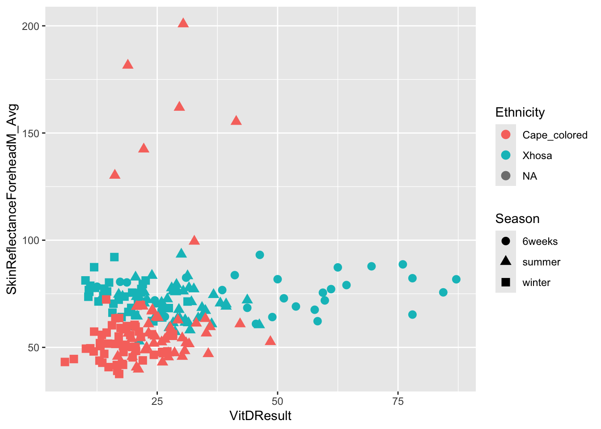
part 1: seasonal PCA
omittedsummer <- na.omit(summer_data)
summer <- select_if(omittedsummer, is.numeric)
summer <- subset(summer, select = -Gender)
summer <- scale(summer)
summerpca <- prcomp(summer)
summary(summerpca)Importance of components:
PC1 PC2 PC3 PC4 PC5 PC6 PC7
Standard deviation 4.2842 1.7984 1.41698 1.13805 1.07273 0.90299 0.7877
Proportion of Variance 0.6329 0.1115 0.06924 0.04466 0.03968 0.02812 0.0214
Cumulative Proportion 0.6329 0.7444 0.81367 0.85833 0.89801 0.92612 0.9475
PC8 PC9 PC10 PC11 PC12 PC13 PC14
Standard deviation 0.73928 0.51186 0.43266 0.41114 0.35984 0.33268 0.19636
Proportion of Variance 0.01885 0.00903 0.00646 0.00583 0.00446 0.00382 0.00133
Cumulative Proportion 0.96637 0.97540 0.98186 0.98769 0.99215 0.99597 0.99730
PC15 PC16 PC17 PC18 PC19 PC20 PC21
Standard deviation 0.17292 0.14688 0.0936 0.07720 0.06128 0.05015 0.04721
Proportion of Variance 0.00103 0.00074 0.0003 0.00021 0.00013 0.00009 0.00008
Cumulative Proportion 0.99833 0.99907 0.9994 0.99958 0.99971 0.99979 0.99987
PC22 PC23 PC24 PC25 PC26 PC27 PC28
Standard deviation 0.04115 0.02735 0.01910 0.01606 0.01516 0.01484 0.0115
Proportion of Variance 0.00006 0.00003 0.00001 0.00001 0.00001 0.00001 0.0000
Cumulative Proportion 0.99993 0.99996 0.99997 0.99998 0.99999 0.99999 1.0000
PC29
Standard deviation 0.008778
Proportion of Variance 0.000000
Cumulative Proportion 1.000000summerpca$loadings[, 1:2]NULLfviz_eig(summerpca, addlabels = TRUE)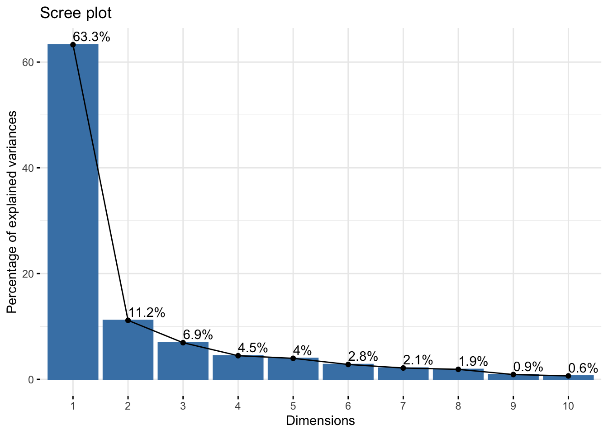
fviz_pca_var(summerpca, col.var = "black")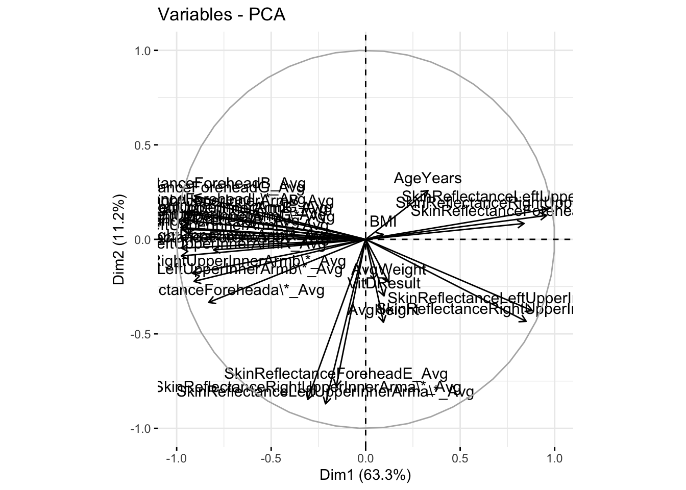
fviz_cos2(summerpca, choice = "var", axes = 1:2)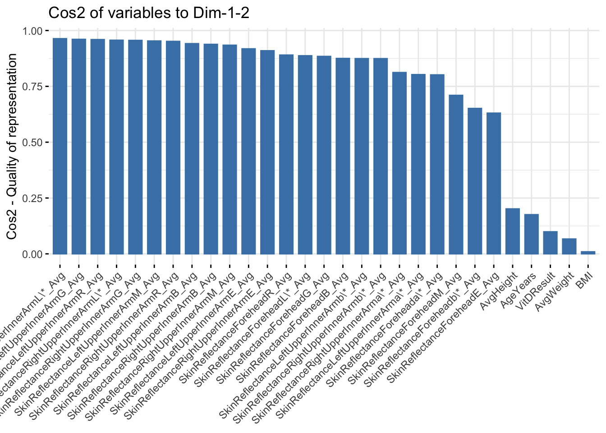
From all of the contributions we know that dimension 1, which accounts for 67.5% of the variance in the summer data, is made up of all of the measures of pigmentation. This is pretty consistent across all of the PCAs.
omittedwinter <- na.omit(winter_data)
winter <- select_if(omittedwinter, is.numeric)
winter <- subset(winter, select = -Gender)
winter <- scale(winter)
winterpca <- prcomp(winter)
summary(winterpca)Importance of components:
PC1 PC2 PC3 PC4 PC5 PC6 PC7
Standard deviation 4.3567 1.8629 1.3981 1.05242 0.92903 0.90375 0.83036
Proportion of Variance 0.6545 0.1197 0.0674 0.03819 0.02976 0.02816 0.02378
Cumulative Proportion 0.6545 0.7742 0.8416 0.87977 0.90953 0.93769 0.96147
PC8 PC9 PC10 PC11 PC12 PC13 PC14
Standard deviation 0.67111 0.46516 0.37730 0.33384 0.30363 0.18478 0.15858
Proportion of Variance 0.01553 0.00746 0.00491 0.00384 0.00318 0.00118 0.00087
Cumulative Proportion 0.97700 0.98446 0.98937 0.99321 0.99639 0.99757 0.99844
PC15 PC16 PC17 PC18 PC19 PC20 PC21
Standard deviation 0.12169 0.11213 0.07944 0.06784 0.04992 0.04790 0.02942
Proportion of Variance 0.00051 0.00043 0.00022 0.00016 0.00009 0.00008 0.00003
Cumulative Proportion 0.99895 0.99938 0.99960 0.99976 0.99984 0.99992 0.99995
PC22 PC23 PC24 PC25 PC26 PC27
Standard deviation 0.02256 0.01960 0.01243 0.01042 0.008914 0.00815
Proportion of Variance 0.00002 0.00001 0.00001 0.00000 0.000000 0.00000
Cumulative Proportion 0.99997 0.99998 0.99999 0.99999 0.999990 1.00000
PC28 PC29
Standard deviation 0.007611 0.005477
Proportion of Variance 0.000000 0.000000
Cumulative Proportion 1.000000 1.000000winterpca$loadings[, 1:2]NULLfviz_eig(winterpca, addlabels = TRUE)fviz_pca_var(winterpca, col.var = "black")
fviz_cos2(winterpca, choice = "var", axes = 1:2)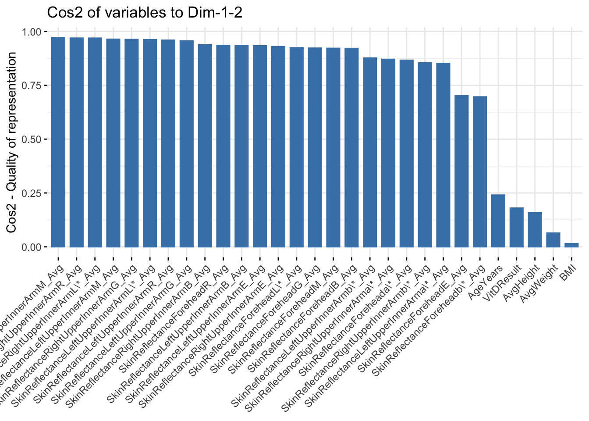
omittedsixweek <- na.omit(six_week_data)
sixweek <- select_if(omittedsixweek, is.numeric)
sixweek <- subset(sixweek, select = -Gender)
sixweek <- scale(sixweek)
sixweekpca <- prcomp(sixweek)
summary(sixweekpca)Importance of components:
PC1 PC2 PC3 PC4 PC5 PC6 PC7
Standard deviation 4.1198 1.9969 1.45010 1.16790 1.06242 0.95510 0.92042
Proportion of Variance 0.5853 0.1375 0.07251 0.04703 0.03892 0.03146 0.02921
Cumulative Proportion 0.5853 0.7228 0.79527 0.84231 0.88123 0.91268 0.94190
PC8 PC9 PC10 PC11 PC12 PC13 PC14
Standard deviation 0.71219 0.57328 0.56691 0.39111 0.34715 0.28573 0.27515
Proportion of Variance 0.01749 0.01133 0.01108 0.00527 0.00416 0.00282 0.00261
Cumulative Proportion 0.95939 0.97072 0.98180 0.98708 0.99123 0.99405 0.99666
PC15 PC16 PC17 PC18 PC19 PC20 PC21
Standard deviation 0.20783 0.15661 0.11001 0.08069 0.05821 0.0537 0.04257
Proportion of Variance 0.00149 0.00085 0.00042 0.00022 0.00012 0.0001 0.00006
Cumulative Proportion 0.99815 0.99899 0.99941 0.99963 0.99975 0.9999 0.99991
PC22 PC23 PC24 PC25 PC26 PC27
Standard deviation 0.03074 0.02490 0.02027 0.01774 0.01165 0.008542
Proportion of Variance 0.00003 0.00002 0.00001 0.00001 0.00000 0.000000
Cumulative Proportion 0.99995 0.99997 0.99998 0.99999 1.00000 1.000000
PC28 PC29
Standard deviation 0.004059 0.0003646
Proportion of Variance 0.000000 0.0000000
Cumulative Proportion 1.000000 1.0000000sixweekpca$loadings[, 1:2]NULLfviz_eig(sixweekpca, addlabels = TRUE)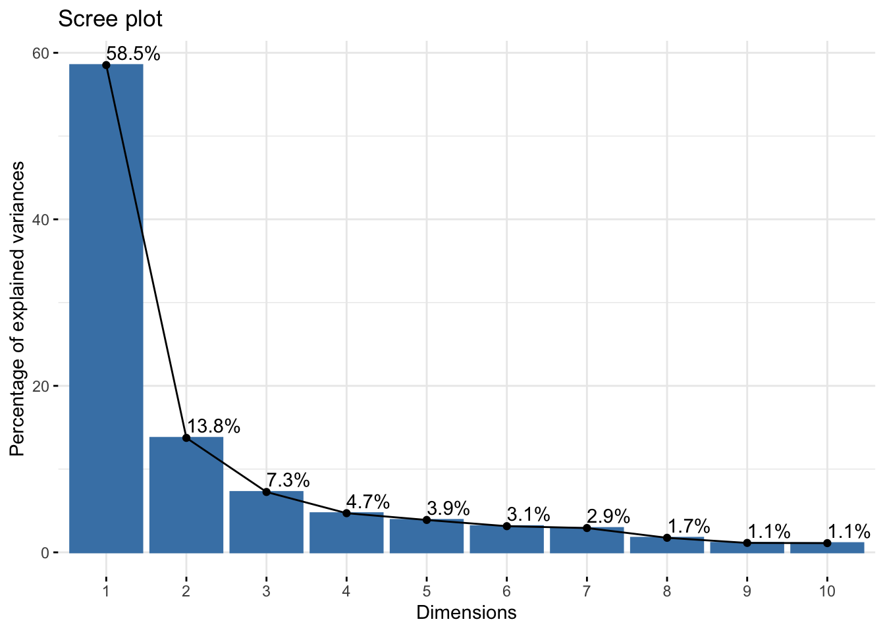
fviz_pca_var(sixweekpca, col.var = "black")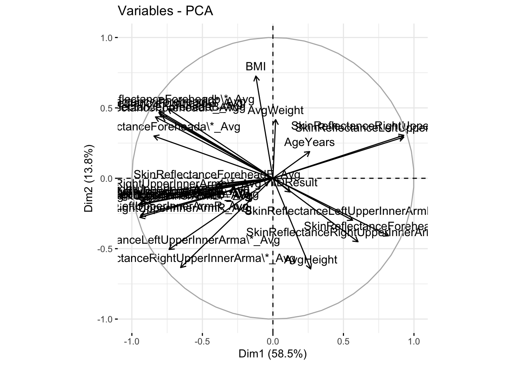
fviz_cos2(sixweekpca, choice = "var", axes = 1:2)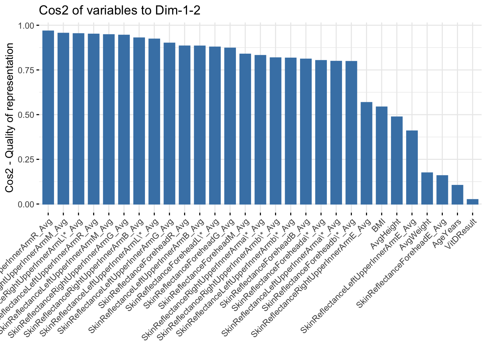
summercomps <- as.data.frame(summerpca$x)
newsummer <- cbind(omittedsummer,summercomps[,c(1,2)])
head(omittedsummer)# A tibble: 6 × 86
ParticipantCentreID InterviewerName TodayDate AgeYears
<chr> <chr> <dttm> <dbl>
1 VDKH001 Betty 2013-02-11 00:00:00 20
2 VDKH002 Betty 2013-02-11 00:00:00 23
3 VDKH003 Betty 2013-02-11 00:00:00 23
4 VDKH005 Betty 2013-02-12 00:00:00 19
5 VDKH006 Betty 2013-02-12 00:00:00 21
6 VDKH007 Betty 2013-02-12 00:00:00 22
# ℹ 82 more variables: DateOfBirth <dttm>, Gender <dbl>, EthnicityOther <lgl>,
# Ethnicity <chr>, RefuseToAnswer <lgl>, AvgWeight <dbl>, AvgHeight <dbl>,
# BMI <dbl>, SoreThroatYes <lgl>, SoreThroatNo <lgl>, RunnyNoseYes <lgl>,
# RunnyNoseNo <lgl>, CoughYes <lgl>, CoughNo <lgl>, FeverYes <lgl>,
# FeverNo <lgl>, NightSweatsYes <lgl>, NightSweatsNo <lgl>,
# UnexplainedWeightLossYes <lgl>, UnexplainedWeightLossNo <lgl>,
# CurrentlyTakingSupplementsYes <lgl>, CurrentlyTakingSupplementsNo <lgl>, …ggplot(newsummer, aes(x=PC1, y=PC2, col = Ethnicity, fill = Ethnicity)) +
stat_ellipse(geom = "polygon", col= "black", alpha =0.5)+
geom_point(shape=21, col="black") +
labs(title = "Summer PCA")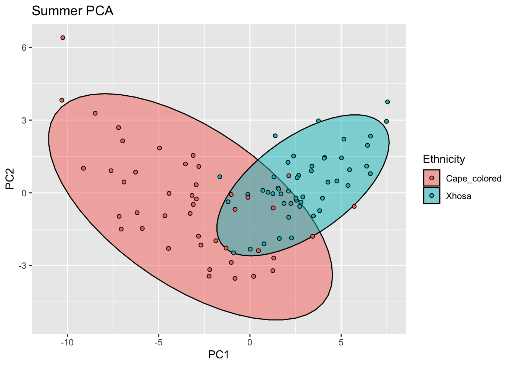
fviz_contrib(summerpca, choice = "var", axes = 1, top = 20)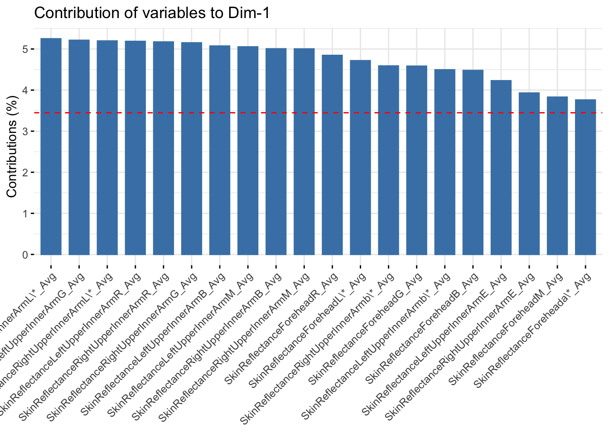
fviz_contrib(summerpca, choice = "var", axes = 2, top = 20)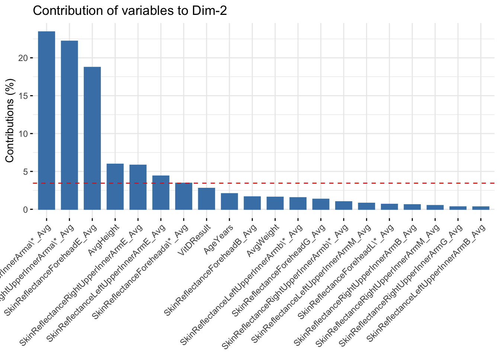
wintercomps <- as.data.frame(winterpca$x)
newwinter <- cbind(omittedwinter,wintercomps[,c(1,2)])
ggplot(newwinter, aes(x=PC1, y=PC2, col = Ethnicity, fill = Ethnicity)) +
stat_ellipse(geom = "polygon", col= "black", alpha =0.5)+
geom_point(shape=21, col="black") +
labs(title = "Winter PCA")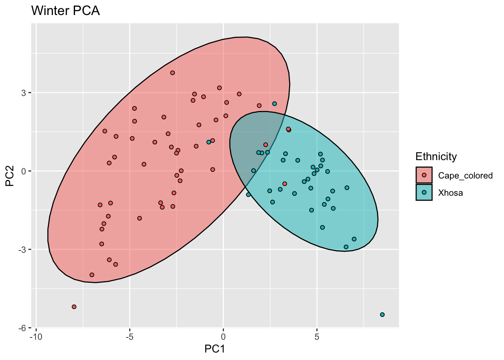
fviz_contrib(winterpca, choice = "var", axes = 1, top = 20)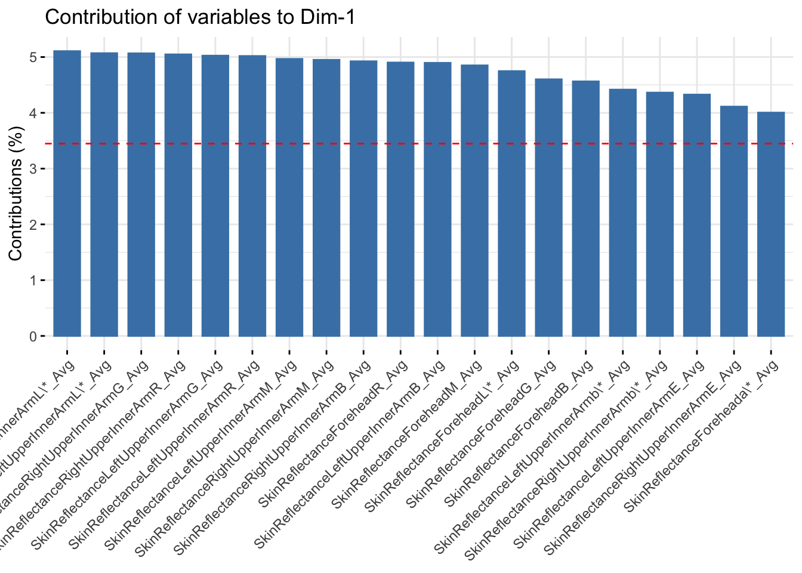
fviz_contrib(winterpca, choice = "var", axes = 2, top = 20)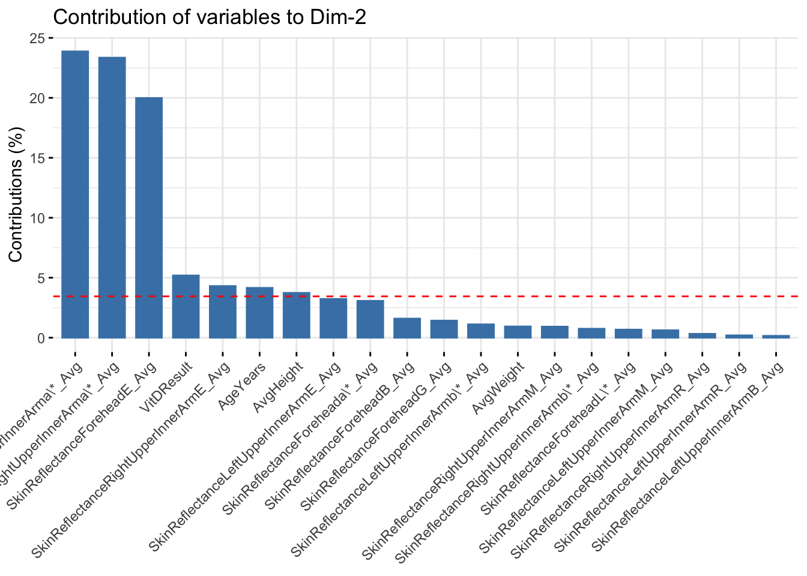
sixweekcomps <- as.data.frame(sixweekpca$x)
newsixweek <- cbind(omittedsixweek,sixweekcomps[,c(1,2)])
ggplot(newsixweek, aes(x=PC1, y=PC2, col = Ethnicity, fill = Ethnicity)) +
stat_ellipse(geom = "polygon", col= "black", alpha =0.5)+
geom_point(shape=21, col="black") +
labs(title = "Six Week PCA")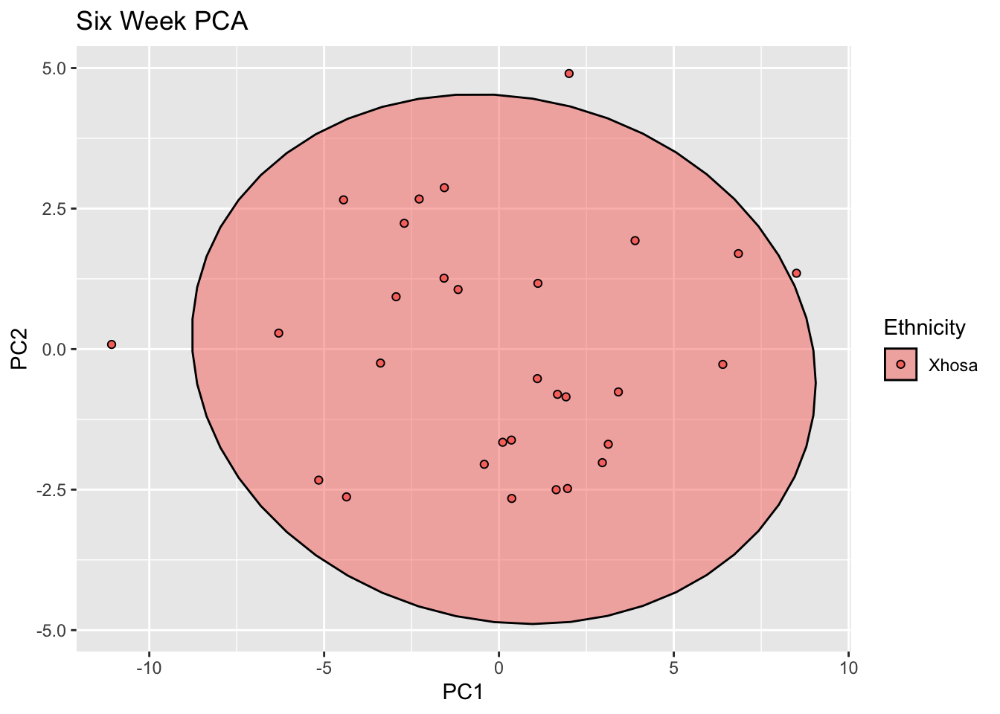
fviz_contrib(sixweekpca, choice = "var", axes = 1, top = 20)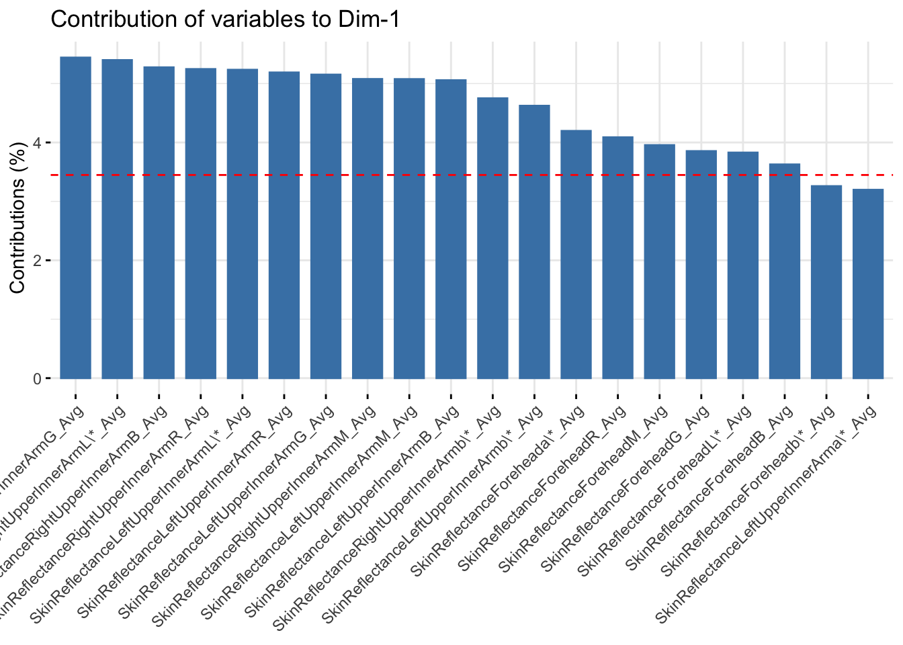
fviz_contrib(sixweekpca, choice = "var", axes = 2, top = 20)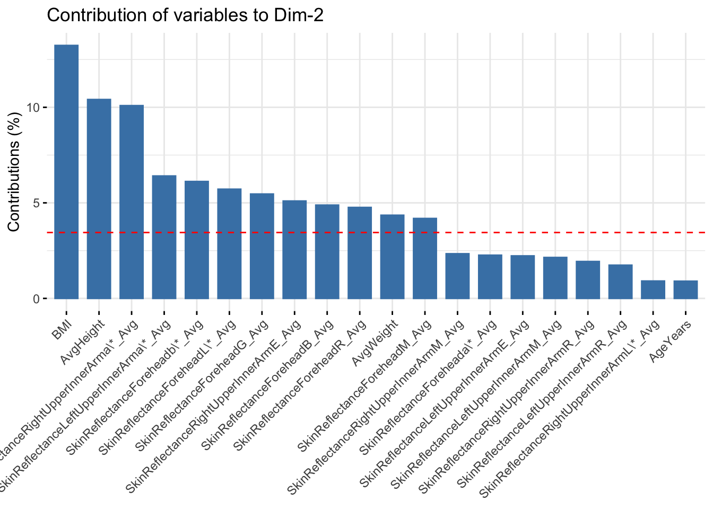
ggplot(newsummer, aes(x=PC1, y=PC2, col = VitDResult, fill = VitDResult)) +
geom_point(aes(shape = Ethnicity), size = 3, stroke = 1, col = "black") +
scale_fill_gradient(low="blue", high="red") +
labs(title = "Summer PCA") +
theme_minimal() +
scale_shape_manual(values = c(21, 22)) 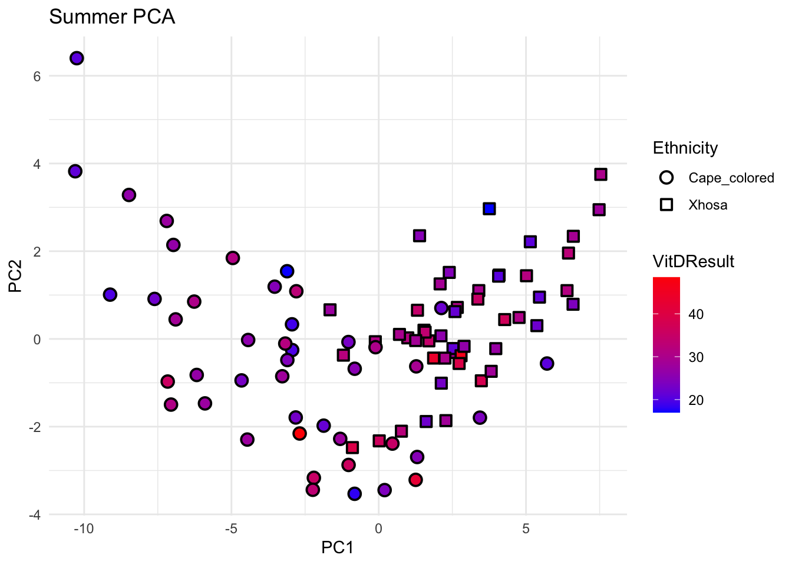
ggplot(newwinter, aes(x=PC1, y=PC2, col = VitDResult, fill = VitDResult)) +
geom_point(aes(shape = Ethnicity), size = 3, stroke = 1, col = "black") +
scale_fill_gradient(low="blue", high="red") +
labs(title = "Summer PCA") +
theme_minimal() +
scale_shape_manual(values = c(21, 22)) 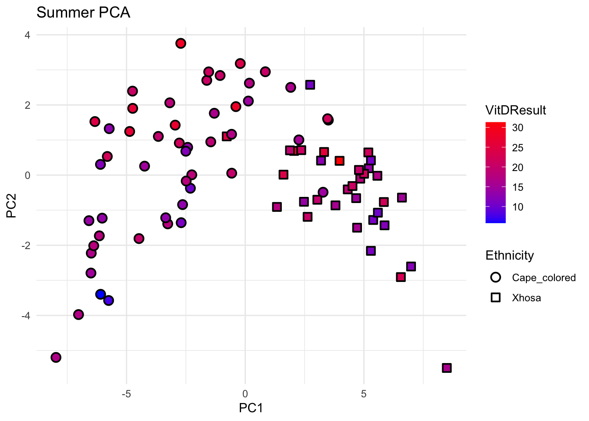
ggplot(newsixweek, aes(x=PC1, y=PC2, col = VitDResult, fill = VitDResult)) +
geom_point(aes(shape = Ethnicity), size = 3, stroke = 1, col = "black") +
scale_fill_gradient(low="blue", high="red") +
labs(title = "Summer PCA") +
theme_minimal() +
scale_shape_manual(values = c(21, 22)) 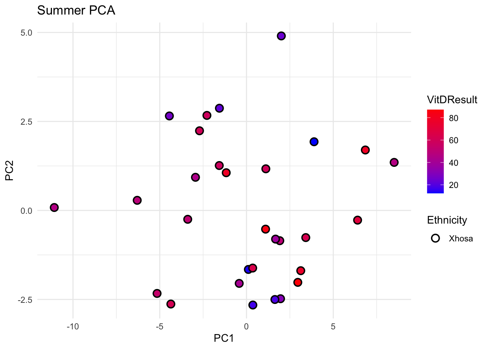
part 2: long data PCA
omittedlong <- na.omit(long_data)
long <- select_if(omittedlong, is.numeric)
long <- subset(long, select = -Gender)
long <- scale(long)
longpca <- prcomp(long)
summary(longpca)Importance of components:
PC1 PC2 PC3 PC4 PC5 PC6 PC7
Standard deviation 4.3446 1.7698 1.38780 1.08862 1.01569 0.86676 0.82076
Proportion of Variance 0.6509 0.1080 0.06641 0.04086 0.03557 0.02591 0.02323
Cumulative Proportion 0.6509 0.7589 0.82529 0.86616 0.90173 0.92764 0.95087
PC8 PC9 PC10 PC11 PC12 PC13 PC14
Standard deviation 0.74207 0.50852 0.42026 0.34794 0.33704 0.28087 0.19337
Proportion of Variance 0.01899 0.00892 0.00609 0.00417 0.00392 0.00272 0.00129
Cumulative Proportion 0.96985 0.97877 0.98486 0.98904 0.99295 0.99567 0.99696
PC15 PC16 PC17 PC18 PC19 PC20 PC21
Standard deviation 0.18300 0.15964 0.09705 0.08629 0.06078 0.05368 0.04738
Proportion of Variance 0.00115 0.00088 0.00032 0.00026 0.00013 0.00010 0.00008
Cumulative Proportion 0.99812 0.99900 0.99932 0.99958 0.99970 0.99980 0.99988
PC22 PC23 PC24 PC25 PC26 PC27 PC28
Standard deviation 0.03193 0.02968 0.02155 0.01791 0.01592 0.01540 0.01201
Proportion of Variance 0.00004 0.00003 0.00002 0.00001 0.00001 0.00001 0.00000
Cumulative Proportion 0.99992 0.99995 0.99996 0.99997 0.99998 0.99999 1.00000
PC29
Standard deviation 0.01088
Proportion of Variance 0.00000
Cumulative Proportion 1.00000longpca$loadings[, 1:2]NULLfviz_eig(longpca, addlabels = TRUE)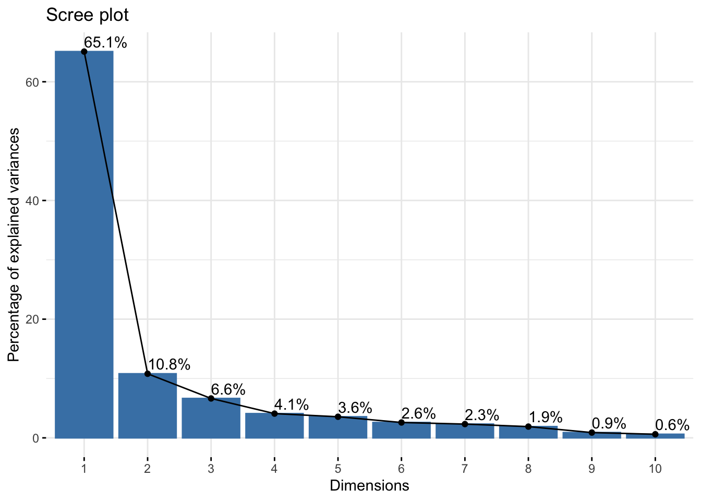
fviz_pca_var(longpca, col.var = "black")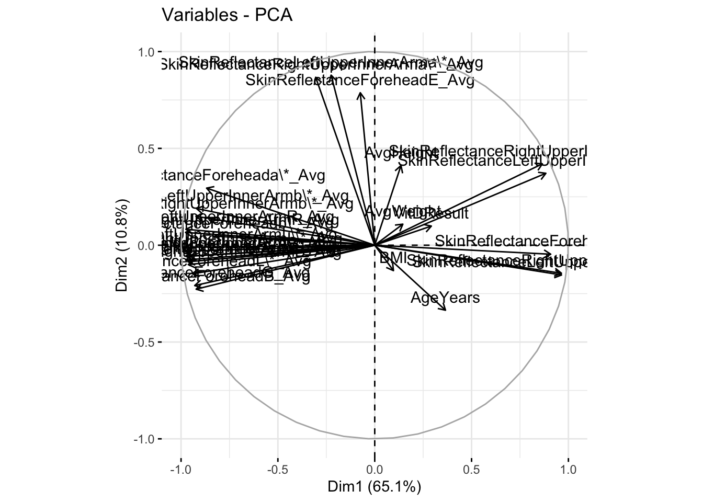
fviz_cos2(longpca, choice = "var", axes = 1:2)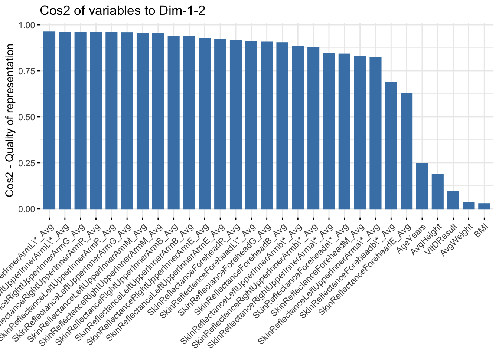
longcomps <- as.data.frame(longpca$x)
newlong <- cbind(omittedlong,longcomps[,c(1,2)])
head(omittedlong)# A tibble: 6 × 87
ParticipantCentreID Season InterviewerName TodayDate AgeYears
<chr> <chr> <chr> <dttm> <dbl>
1 VDKH001 summer Betty 2013-02-11 00:00:00 20
2 VDKH001 winter Rene 2013-08-01 00:00:00 20
3 VDKH001 6weeks Rene 2013-09-16 00:00:00 20
4 VDKH002 summer Betty 2013-02-11 00:00:00 23
5 VDKH002 winter Rene 2013-08-06 00:00:00 23
6 VDKH002 6weeks Rene 2013-09-17 00:00:00 23
# ℹ 82 more variables: DateOfBirth <dttm>, Gender <dbl>, EthnicityOther <lgl>,
# Ethnicity <chr>, RefuseToAnswer <lgl>, AvgWeight <dbl>, AvgHeight <dbl>,
# BMI <dbl>, SoreThroatYes <lgl>, SoreThroatNo <lgl>, RunnyNoseYes <lgl>,
# RunnyNoseNo <lgl>, CoughYes <lgl>, CoughNo <lgl>, FeverYes <lgl>,
# FeverNo <lgl>, NightSweatsYes <lgl>, NightSweatsNo <lgl>,
# UnexplainedWeightLossYes <lgl>, UnexplainedWeightLossNo <lgl>,
# CurrentlyTakingSupplementsYes <lgl>, CurrentlyTakingSupplementsNo <lgl>, …ggplot(newlong, aes(x=PC1, y=PC2, col = Ethnicity, fill = Ethnicity)) +
stat_ellipse(geom = "polygon", col= "black", alpha =0.5)+
geom_point(shape=21, col="black") +
labs(title = "Summer PCA")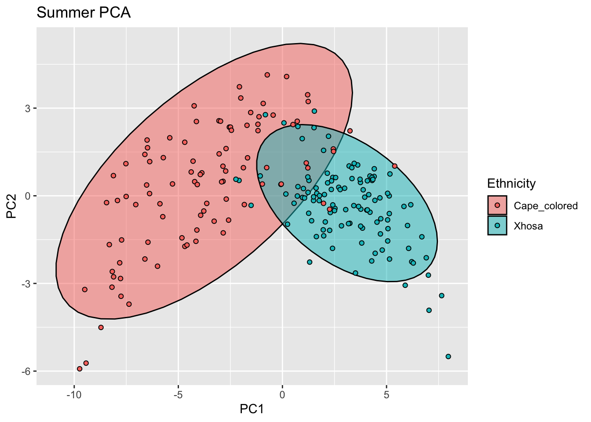
fviz_contrib(longpca, choice = "var", axes = 1, top = 20)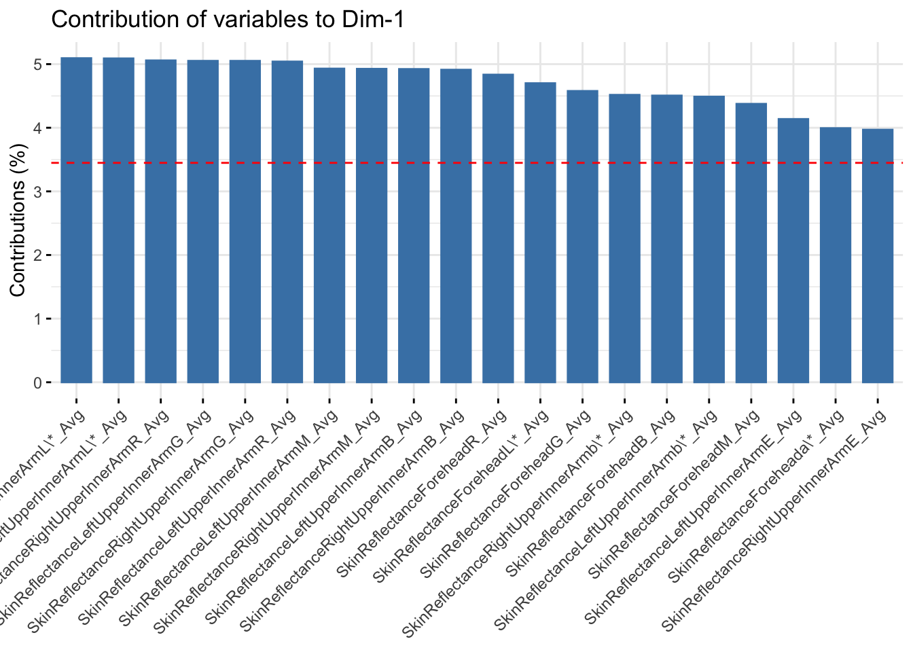
fviz_contrib(longpca, choice = "var", axes = 2, top = 20)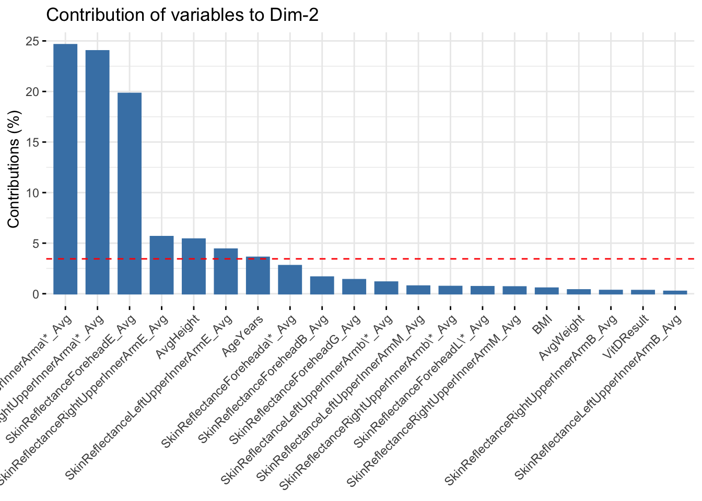
pal <- wes_palette("Zissou1", 10, type = "continuous")
ggplot(newlong, aes(x=PC1, y=PC2, col = VitDResult, fill = VitDResult)) +
geom_point(aes(shape = Ethnicity), size = 3, stroke = 1, col = "black") +
scale_fill_gradientn(colors = pal) +
labs(title = "Long PCA") +
theme_minimal() +
scale_shape_manual(values = c(21, 22)) 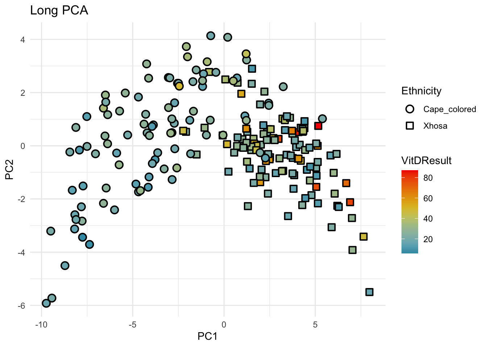
omittedwide <- na.omit(joined_data)
wide <- select_if(omittedwide, is.numeric)
wide_standard <- scale(wide)
widepca <- prcomp(wide_standard, center = T, scale. = T)
summary(widepca)Importance of components:
PC1 PC2 PC3 PC4 PC5 PC6 PC7
Standard deviation 6.6417 3.3313 2.84373 2.36456 1.9535 1.80324 1.60748
Proportion of Variance 0.4901 0.1233 0.08985 0.06212 0.0424 0.03613 0.02871
Cumulative Proportion 0.4901 0.6135 0.70330 0.76543 0.8078 0.84396 0.87267
PC8 PC9 PC10 PC11 PC12 PC13 PC14
Standard deviation 1.41235 1.24969 1.22414 1.07662 0.99441 0.87116 0.82403
Proportion of Variance 0.02216 0.01735 0.01665 0.01288 0.01099 0.00843 0.00754
Cumulative Proportion 0.89483 0.91219 0.92884 0.94172 0.95270 0.96114 0.96868
PC15 PC16 PC17 PC18 PC19 PC20 PC21
Standard deviation 0.74755 0.69263 0.59848 0.56559 0.50773 0.43115 0.39446
Proportion of Variance 0.00621 0.00533 0.00398 0.00355 0.00286 0.00207 0.00173
Cumulative Proportion 0.97489 0.98022 0.98420 0.98775 0.99062 0.99268 0.99441
PC22 PC23 PC24 PC25 PC26 PC27 PC28
Standard deviation 0.34592 0.3284 0.31872 0.29252 0.23953 0.17531 5.572e-16
Proportion of Variance 0.00133 0.0012 0.00113 0.00095 0.00064 0.00034 0.000e+00
Cumulative Proportion 0.99574 0.9969 0.99807 0.99902 0.99966 1.00000 1.000e+00widepca$rotation PC1 PC2
AgeYears-summer -0.0184284848 0.0650561236
Gender-summer 0.0848353196 0.1947431379
AvgWeight-summer -0.0082565819 0.1052483327
AvgHeight-summer -0.0315608281 -0.1591783992
BMI-summer 0.0135182905 0.2136554317
VitDResult-summer 0.0375038972 0.0340579857
SkinReflectanceForeheadE_Avg-summer 0.0753808406 -0.0345546302
SkinReflectanceForeheadM_Avg-summer -0.1117769784 0.0238791384
SkinReflectanceForeheadR_Avg-summer 0.1226021525 0.0297002525
SkinReflectanceForeheadG_Avg-summer 0.1177062543 0.0312030337
SkinReflectanceForeheadB_Avg-summer 0.1090595456 0.0375158757
SkinReflectanceForeheadL\\*_Avg-summer 0.1175518121 0.0439362548
SkinReflectanceForeheada\\*_Avg-summer 0.1176505639 0.0328602712
SkinReflectanceForeheadb\\*_Avg-summer 0.1188767220 0.0137563623
SkinReflectanceRightUpperInnerArmE_Avg-summer -0.0579021017 -0.1082890555
SkinReflectanceRightUpperInnerArmM_Avg-summer -0.1191332744 0.0312118343
SkinReflectanceRightUpperInnerArmR_Avg-summer 0.1216118601 -0.0428674682
SkinReflectanceRightUpperInnerArmG_Avg-summer 0.1216878499 -0.0185525989
SkinReflectanceRightUpperInnerArmB_Avg-summer 0.1171768483 -0.0313124006
SkinReflectanceRightUpperInnerArmL\\*_Avg-summer 0.1220476009 -0.0238228984
SkinReflectanceRightUpperInnerArma\\*_Avg-summer 0.0987078757 -0.0978704983
SkinReflectanceRightUpperInnerArmb\\*_Avg-summer 0.1242097770 0.0076448850
SkinReflectanceLeftUpperInnerArmE_Avg-summer -0.0381254176 -0.1431298342
SkinReflectanceLeftUpperInnerArmM_Avg-summer -0.1236571450 0.0554846514
SkinReflectanceLeftUpperInnerArmR_Avg-summer 0.1217555862 -0.0527590195
SkinReflectanceLeftUpperInnerArmG_Avg-summer 0.1202322331 -0.0183807045
SkinReflectanceLeftUpperInnerArmB_Avg-summer 0.1151064685 -0.0238024822
SkinReflectanceLeftUpperInnerArmL\\*_Avg-summer 0.1226970204 -0.0264301746
SkinReflectanceLeftUpperInnerArma\\*_Avg-summer 0.1041780917 -0.1387363416
SkinReflectanceLeftUpperInnerArmb\\*_Avg-summer 0.1253198524 0.0004148531
AgeYears-winter -0.0215791203 0.0336792481
Gender-winter 0.0848353196 0.1947431379
AvgWeight-winter -0.0078494898 0.1174998799
AvgHeight-winter -0.0375653969 -0.1793462811
BMI-winter 0.0147973458 0.2123618215
VitDResult-winter 0.0424132087 0.1012485587
SkinReflectanceForeheadE_Avg-winter 0.0700092738 -0.0523233602
SkinReflectanceForeheadM_Avg-winter -0.1246455511 -0.0898084919
SkinReflectanceForeheadR_Avg-winter 0.1203833841 0.1248566940
SkinReflectanceForeheadG_Avg-winter 0.1137713821 0.1353335641
SkinReflectanceForeheadB_Avg-winter 0.1085869401 0.1440033574
SkinReflectanceForeheadL\\*_Avg-winter 0.1164400891 0.1152881987
SkinReflectanceForeheada\\*_Avg-winter 0.1192879856 0.0748432179
SkinReflectanceForeheadb\\*_Avg-winter 0.1165838091 0.0795712843
SkinReflectanceRightUpperInnerArmE_Avg-winter -0.0038154982 -0.1942250859
SkinReflectanceRightUpperInnerArmM_Avg-winter -0.1316512809 0.0754291331
SkinReflectanceRightUpperInnerArmR_Avg-winter 0.1322169820 -0.0578346379
SkinReflectanceRightUpperInnerArmG_Avg-winter 0.1293581747 -0.0117354367
SkinReflectanceRightUpperInnerArmB_Avg-winter 0.1251382504 -0.0406154089
SkinReflectanceRightUpperInnerArmL\\*_Avg-winter 0.1310991562 -0.0180290270
SkinReflectanceRightUpperInnerArma\\*_Avg-winter 0.1079773113 -0.1600124366
SkinReflectanceRightUpperInnerArmb\\*_Avg-winter 0.1307331223 0.0452051137
SkinReflectanceLeftUpperInnerArmE_Avg-winter -0.0285022121 -0.1744962375
SkinReflectanceLeftUpperInnerArmM_Avg-winter -0.1352765798 0.0745276809
SkinReflectanceLeftUpperInnerArmR_Avg-winter 0.1358168208 -0.0673866087
SkinReflectanceLeftUpperInnerArmG_Avg-winter 0.1340818769 -0.0281481419
SkinReflectanceLeftUpperInnerArmB_Avg-winter 0.1291590544 -0.0388897546
SkinReflectanceLeftUpperInnerArmL\\*_Avg-winter 0.1360389504 -0.0329502448
SkinReflectanceLeftUpperInnerArma\\*_Avg-winter 0.1129020604 -0.1640903762
SkinReflectanceLeftUpperInnerArmb\\*_Avg-winter 0.1368014215 -0.0157789893
AgeYears-6weeks -0.0202189088 0.0609858053
Gender-6weeks 0.0679011567 0.1851178770
AvgWeight-6weeks 0.0002601421 0.1180065948
AvgHeight-6weeks -0.0365856204 -0.1978987833
BMI-6weeks 0.0199043768 0.2124946648
VitDResult-6weeks -0.0056514025 -0.0419288650
SkinReflectanceForeheadE_Avg-6weeks 0.0637649602 -0.0420791300
SkinReflectanceForeheadM_Avg-6weeks -0.1182540456 -0.0994519101
SkinReflectanceForeheadR_Avg-6weeks 0.1169578983 0.1070937050
SkinReflectanceForeheadG_Avg-6weeks 0.1124542195 0.1209756795
SkinReflectanceForeheadB_Avg-6weeks 0.1096411939 0.1002613207
SkinReflectanceForeheadL\\*_Avg-6weeks 0.1153090234 0.1228647931
SkinReflectanceForeheada\\*_Avg-6weeks 0.1193518305 0.0548059206
SkinReflectanceForeheadb\\*_Avg-6weeks 0.1043007610 0.1477970142
SkinReflectanceRightUpperInnerArmE_Avg-6weeks -0.0761069135 -0.1608804529
SkinReflectanceRightUpperInnerArmM_Avg-6weeks -0.1274834590 0.1102671366
SkinReflectanceRightUpperInnerArmR_Avg-6weeks 0.1303042273 -0.1000824085
SkinReflectanceRightUpperInnerArmG_Avg-6weeks 0.1349218879 -0.0492274247
SkinReflectanceRightUpperInnerArmB_Avg-6weeks 0.1327821514 -0.0684286704
SkinReflectanceRightUpperInnerArmL\\*_Avg-6weeks 0.1335779069 -0.0630015505
SkinReflectanceRightUpperInnerArma\\*_Avg-6weeks 0.0839657807 -0.2234505246
SkinReflectanceRightUpperInnerArmb\\*_Avg-6weeks 0.1235049974 -0.0208822558
SkinReflectanceLeftUpperInnerArmE_Avg-6weeks -0.0868736181 -0.1179878023
SkinReflectanceLeftUpperInnerArmM_Avg-6weeks -0.1318784235 0.1018662369
SkinReflectanceLeftUpperInnerArmR_Avg-6weeks 0.1331909578 -0.0973892568
SkinReflectanceLeftUpperInnerArmG_Avg-6weeks 0.1364679322 -0.0552448705
SkinReflectanceLeftUpperInnerArmB_Avg-6weeks 0.1346296824 -0.0574609845
SkinReflectanceLeftUpperInnerArmL\\*_Avg-6weeks 0.1373679073 -0.0667686583
SkinReflectanceLeftUpperInnerArma\\*_Avg-6weeks 0.0932325477 -0.1789104052
SkinReflectanceLeftUpperInnerArmb\\*_Avg-6weeks 0.1268649520 -0.0509639263
PC3 PC4
AgeYears-summer 0.149057322 0.001384417
Gender-summer -0.023117023 0.150228745
AvgWeight-summer 0.224820412 -0.235258333
AvgHeight-summer 0.110857198 -0.193230922
BMI-summer 0.154584296 -0.110989011
VitDResult-summer -0.025484173 -0.174847030
SkinReflectanceForeheadE_Avg-summer -0.096950956 -0.107258900
SkinReflectanceForeheadM_Avg-summer 0.051355393 0.139027639
SkinReflectanceForeheadR_Avg-summer -0.078110665 -0.112337682
SkinReflectanceForeheadG_Avg-summer -0.046667307 -0.097263811
SkinReflectanceForeheadB_Avg-summer -0.073167620 -0.100425930
SkinReflectanceForeheadL\\*_Avg-summer -0.033258556 -0.100806592
SkinReflectanceForeheada\\*_Avg-summer -0.123054513 -0.147801332
SkinReflectanceForeheadb\\*_Avg-summer 0.045654574 -0.084797308
SkinReflectanceRightUpperInnerArmE_Avg-summer -0.176966389 -0.157542384
SkinReflectanceRightUpperInnerArmM_Avg-summer -0.144712353 0.021957124
SkinReflectanceRightUpperInnerArmR_Avg-summer 0.153158633 -0.017700792
SkinReflectanceRightUpperInnerArmG_Avg-summer 0.170670138 0.013800440
SkinReflectanceRightUpperInnerArmB_Avg-summer 0.178565298 -0.005718192
SkinReflectanceRightUpperInnerArmL\\*_Avg-summer 0.162139331 0.020191544
SkinReflectanceRightUpperInnerArma\\*_Avg-summer 0.077708060 -0.117161016
SkinReflectanceRightUpperInnerArmb\\*_Avg-summer 0.119601272 0.051608849
SkinReflectanceLeftUpperInnerArmE_Avg-summer -0.218936082 -0.128359896
SkinReflectanceLeftUpperInnerArmM_Avg-summer -0.153600820 0.047310329
SkinReflectanceLeftUpperInnerArmR_Avg-summer 0.162312039 -0.042731111
SkinReflectanceLeftUpperInnerArmG_Avg-summer 0.185723720 -0.015372217
SkinReflectanceLeftUpperInnerArmB_Avg-summer 0.189618210 -0.026582608
SkinReflectanceLeftUpperInnerArmL\\*_Avg-summer 0.178231649 -0.017351698
SkinReflectanceLeftUpperInnerArma\\*_Avg-summer 0.050714208 -0.129915740
SkinReflectanceLeftUpperInnerArmb\\*_Avg-summer 0.157959015 -0.004170019
AgeYears-winter 0.117872440 -0.043611091
Gender-winter -0.023117023 0.150228745
AvgWeight-winter 0.208597629 -0.230094662
AvgHeight-winter 0.113108869 -0.163177966
BMI-winter 0.138511956 -0.132102793
VitDResult-winter 0.010605401 -0.040527157
SkinReflectanceForeheadE_Avg-winter -0.070003629 -0.170266997
SkinReflectanceForeheadM_Avg-winter 0.103253510 0.104721796
SkinReflectanceForeheadR_Avg-winter -0.090550173 -0.071324828
SkinReflectanceForeheadG_Avg-winter -0.068246231 -0.045348663
SkinReflectanceForeheadB_Avg-winter -0.052574669 -0.047479510
SkinReflectanceForeheadL\\*_Avg-winter -0.086775791 -0.079680354
SkinReflectanceForeheada\\*_Avg-winter -0.105521894 -0.148008487
SkinReflectanceForeheadb\\*_Avg-winter -0.085278173 -0.058256199
SkinReflectanceRightUpperInnerArmE_Avg-winter -0.018671694 -0.140233359
SkinReflectanceRightUpperInnerArmM_Avg-winter 0.075035352 -0.021105839
SkinReflectanceRightUpperInnerArmR_Avg-winter -0.063311131 0.049397883
SkinReflectanceRightUpperInnerArmG_Avg-winter -0.068598318 0.085443446
SkinReflectanceRightUpperInnerArmB_Avg-winter -0.054232862 0.074770803
SkinReflectanceRightUpperInnerArmL\\*_Avg-winter -0.064841390 0.078238595
SkinReflectanceRightUpperInnerArma\\*_Avg-winter -0.058209936 -0.056517019
SkinReflectanceRightUpperInnerArmb\\*_Avg-winter -0.086161600 0.073428959
SkinReflectanceLeftUpperInnerArmE_Avg-winter -0.067525607 -0.226217345
SkinReflectanceLeftUpperInnerArmM_Avg-winter 0.010649525 -0.098296630
SkinReflectanceLeftUpperInnerArmR_Avg-winter 0.004522078 0.103090574
SkinReflectanceLeftUpperInnerArmG_Avg-winter 0.011484354 0.143747708
SkinReflectanceLeftUpperInnerArmB_Avg-winter 0.026891923 0.151393544
SkinReflectanceLeftUpperInnerArmL\\*_Avg-winter 0.016680908 0.131063993
SkinReflectanceLeftUpperInnerArma\\*_Avg-winter -0.013268519 -0.028647910
SkinReflectanceLeftUpperInnerArmb\\*_Avg-winter -0.010510757 0.068006451
AgeYears-6weeks 0.126307907 -0.007173098
Gender-6weeks -0.068150194 0.161809455
AvgWeight-6weeks 0.193657607 -0.238664857
AvgHeight-6weeks 0.094156036 -0.121773614
BMI-6weeks 0.123404329 -0.158580065
VitDResult-6weeks -0.042214341 -0.064927409
SkinReflectanceForeheadE_Avg-6weeks -0.058364166 -0.104746018
SkinReflectanceForeheadM_Avg-6weeks 0.127561797 0.074475470
SkinReflectanceForeheadR_Avg-6weeks -0.146028112 -0.091362334
SkinReflectanceForeheadG_Avg-6weeks -0.140355772 -0.084345729
SkinReflectanceForeheadB_Avg-6weeks -0.136934791 -0.099413154
SkinReflectanceForeheadL\\*_Avg-6weeks -0.126324129 -0.096498412
SkinReflectanceForeheada\\*_Avg-6weeks -0.141404308 -0.102919796
SkinReflectanceForeheadb\\*_Avg-6weeks -0.092662660 -0.058187240
SkinReflectanceRightUpperInnerArmE_Avg-6weeks -0.108434158 -0.057855411
SkinReflectanceRightUpperInnerArmM_Avg-6weeks 0.014747945 -0.013511395
SkinReflectanceRightUpperInnerArmR_Avg-6weeks -0.001498543 0.031449485
SkinReflectanceRightUpperInnerArmG_Avg-6weeks 0.024163839 0.038251375
SkinReflectanceRightUpperInnerArmB_Avg-6weeks 0.030531271 0.020312079
SkinReflectanceRightUpperInnerArmL\\*_Avg-6weeks 0.010631986 0.035763023
SkinReflectanceRightUpperInnerArma\\*_Avg-6weeks -0.054080270 -0.032277669
SkinReflectanceRightUpperInnerArmb\\*_Avg-6weeks -0.019981951 0.071388766
SkinReflectanceLeftUpperInnerArmE_Avg-6weeks -0.112397069 -0.152299798
SkinReflectanceLeftUpperInnerArmM_Avg-6weeks -0.019496846 -0.046399850
SkinReflectanceLeftUpperInnerArmR_Avg-6weeks 0.027106218 0.056150087
SkinReflectanceLeftUpperInnerArmG_Avg-6weeks 0.050333892 0.081332845
SkinReflectanceLeftUpperInnerArmB_Avg-6weeks 0.051688603 0.064437396
SkinReflectanceLeftUpperInnerArmL\\*_Avg-6weeks 0.044176900 0.071906758
SkinReflectanceLeftUpperInnerArma\\*_Avg-6weeks -0.049773539 -0.061691378
SkinReflectanceLeftUpperInnerArmb\\*_Avg-6weeks 0.026340634 0.108565065
PC5 PC6
AgeYears-summer -0.3593784598 0.0950371529
Gender-summer 0.0716252238 0.0830917307
AvgWeight-summer 0.0756726021 0.1081939543
AvgHeight-summer -0.0788063643 -0.0656549808
BMI-summer 0.1332473672 0.1545933143
VitDResult-summer -0.2026226980 0.1789479368
SkinReflectanceForeheadE_Avg-summer -0.0545077935 0.2353695606
SkinReflectanceForeheadM_Avg-summer -0.0131482678 0.1990083905
SkinReflectanceForeheadR_Avg-summer 0.0698272087 -0.2069203782
SkinReflectanceForeheadG_Avg-summer 0.0841022284 -0.2604963087
SkinReflectanceForeheadB_Avg-summer 0.0732760382 -0.2689853637
SkinReflectanceForeheadL\\*_Avg-summer 0.0629323220 -0.2587754174
SkinReflectanceForeheada\\*_Avg-summer -0.0325485203 -0.1036149404
SkinReflectanceForeheadb\\*_Avg-summer 0.0881604667 -0.1982971694
SkinReflectanceRightUpperInnerArmE_Avg-summer -0.0135002171 0.0106003651
SkinReflectanceRightUpperInnerArmM_Avg-summer 0.0414036819 0.0542878373
SkinReflectanceRightUpperInnerArmR_Avg-summer -0.0271461903 -0.0575873992
SkinReflectanceRightUpperInnerArmG_Avg-summer -0.0121557868 -0.0582225457
SkinReflectanceRightUpperInnerArmB_Avg-summer -0.0101858797 -0.0623020676
SkinReflectanceRightUpperInnerArmL\\*_Avg-summer -0.0263847386 -0.0690971791
SkinReflectanceRightUpperInnerArma\\*_Avg-summer -0.0862424173 -0.0156078885
SkinReflectanceRightUpperInnerArmb\\*_Avg-summer -0.0346776635 -0.0896687502
SkinReflectanceLeftUpperInnerArmE_Avg-summer 0.0697841491 0.0805795394
SkinReflectanceLeftUpperInnerArmM_Avg-summer -0.0255856975 0.0594670400
SkinReflectanceLeftUpperInnerArmR_Avg-summer -0.0009049663 -0.0690928735
SkinReflectanceLeftUpperInnerArmG_Avg-summer -0.0099981400 -0.0613673037
SkinReflectanceLeftUpperInnerArmB_Avg-summer -0.0206522216 -0.0818068173
SkinReflectanceLeftUpperInnerArmL\\*_Avg-summer -0.0174243309 -0.0560200007
SkinReflectanceLeftUpperInnerArma\\*_Avg-summer 0.0152028903 -0.0657595392
SkinReflectanceLeftUpperInnerArmb\\*_Avg-summer -0.0054308123 -0.0203369182
AgeYears-winter -0.4323120193 0.0946515248
Gender-winter 0.0716252238 0.0830917307
AvgWeight-winter 0.0962230704 0.1297399834
AvgHeight-winter -0.0550417529 -0.0693904386
BMI-winter 0.1318835513 0.1685815625
VitDResult-winter -0.1681778238 0.1674477348
SkinReflectanceForeheadE_Avg-winter 0.1093295557 0.1700356253
SkinReflectanceForeheadM_Avg-winter 0.0144324157 0.0253950173
SkinReflectanceForeheadR_Avg-winter -0.0851374739 -0.0493105954
SkinReflectanceForeheadG_Avg-winter -0.1128102589 -0.0832943921
SkinReflectanceForeheadB_Avg-winter -0.1102876815 -0.1018443324
SkinReflectanceForeheadL\\*_Avg-winter -0.1002611264 -0.0552933138
SkinReflectanceForeheada\\*_Avg-winter -0.0126094934 0.0513858940
SkinReflectanceForeheadb\\*_Avg-winter -0.1259708014 -0.0460639521
SkinReflectanceRightUpperInnerArmE_Avg-winter 0.2005649075 0.0756751151
SkinReflectanceRightUpperInnerArmM_Avg-winter 0.0288893237 -0.0903599495
SkinReflectanceRightUpperInnerArmR_Avg-winter -0.0550195493 0.1012401103
SkinReflectanceRightUpperInnerArmG_Avg-winter -0.0781411028 0.0728116060
SkinReflectanceRightUpperInnerArmB_Avg-winter -0.0831261262 0.0784066876
SkinReflectanceRightUpperInnerArmL\\*_Avg-winter -0.0612704595 0.0810014409
SkinReflectanceRightUpperInnerArma\\*_Avg-winter -0.0006828151 0.1339385348
SkinReflectanceRightUpperInnerArmb\\*_Avg-winter 0.0204699675 0.0775781827
SkinReflectanceLeftUpperInnerArmE_Avg-winter 0.0899191475 0.1154308886
SkinReflectanceLeftUpperInnerArmM_Avg-winter 0.0115465304 0.0002916978
SkinReflectanceLeftUpperInnerArmR_Avg-winter -0.0112859913 0.0113531864
SkinReflectanceLeftUpperInnerArmG_Avg-winter -0.0287998620 -0.0099035150
SkinReflectanceLeftUpperInnerArmB_Avg-winter -0.0298668889 -0.0178510441
SkinReflectanceLeftUpperInnerArmL\\*_Avg-winter -0.0241326597 -0.0118700873
SkinReflectanceLeftUpperInnerArma\\*_Avg-winter 0.0249189971 0.0677607284
SkinReflectanceLeftUpperInnerArmb\\*_Avg-winter 0.0158520065 0.0155203991
AgeYears-6weeks -0.4096616068 0.0877052182
Gender-6weeks 0.1359641538 0.1073583105
AvgWeight-6weeks 0.1150160984 0.1470967145
AvgHeight-6weeks -0.0626336221 -0.0275096496
BMI-6weeks 0.1478856858 0.1373422719
VitDResult-6weeks -0.2222136171 -0.0126045197
SkinReflectanceForeheadE_Avg-6weeks 0.0752651474 0.2102509072
SkinReflectanceForeheadM_Avg-6weeks 0.0199432905 -0.0426421441
SkinReflectanceForeheadR_Avg-6weeks -0.0377603134 0.0111341364
SkinReflectanceForeheadG_Avg-6weeks -0.0543559277 -0.0114709782
SkinReflectanceForeheadB_Avg-6weeks -0.0865458600 0.0065713368
SkinReflectanceForeheadL\\*_Avg-6weeks -0.0685809723 -0.0198021657
SkinReflectanceForeheada\\*_Avg-6weeks 0.0112676964 0.0416041115
SkinReflectanceForeheadb\\*_Avg-6weeks -0.0214046399 -0.0535886021
SkinReflectanceRightUpperInnerArmE_Avg-6weeks -0.1457704164 -0.0462283559
SkinReflectanceRightUpperInnerArmM_Avg-6weeks -0.0522701856 -0.1069692420
SkinReflectanceRightUpperInnerArmR_Avg-6weeks 0.0344015943 0.0954790868
SkinReflectanceRightUpperInnerArmG_Avg-6weeks 0.0657152368 0.0873401682
SkinReflectanceRightUpperInnerArmB_Avg-6weeks 0.0598811894 0.0809245669
SkinReflectanceRightUpperInnerArmL\\*_Avg-6weeks 0.0409521034 0.1055040394
SkinReflectanceRightUpperInnerArma\\*_Avg-6weeks -0.0349032231 0.0276345971
SkinReflectanceRightUpperInnerArmb\\*_Avg-6weeks 0.0256022053 0.1294812463
SkinReflectanceLeftUpperInnerArmE_Avg-6weeks -0.0793594449 0.0517422200
SkinReflectanceLeftUpperInnerArmM_Avg-6weeks -0.0434914506 -0.0660241264
SkinReflectanceLeftUpperInnerArmR_Avg-6weeks 0.0351210312 0.0690873652
SkinReflectanceLeftUpperInnerArmG_Avg-6weeks 0.0434462949 0.0465010150
SkinReflectanceLeftUpperInnerArmB_Avg-6weeks 0.0451041849 0.0343140678
SkinReflectanceLeftUpperInnerArmL\\*_Avg-6weeks 0.0358318245 0.0556076481
SkinReflectanceLeftUpperInnerArma\\*_Avg-6weeks -0.0056594628 0.0898482192
SkinReflectanceLeftUpperInnerArmb\\*_Avg-6weeks 0.0223016918 0.1318716561
PC7 PC8
AgeYears-summer -0.148233086 0.043249004
Gender-summer -0.081725697 -0.052099059
AvgWeight-summer 0.038644964 -0.171096866
AvgHeight-summer 0.099074331 -0.360015958
BMI-summer -0.041238354 0.089025785
VitDResult-summer 0.347580472 0.137195920
SkinReflectanceForeheadE_Avg-summer -0.005229516 -0.024299987
SkinReflectanceForeheadM_Avg-summer 0.011323436 0.010084801
SkinReflectanceForeheadR_Avg-summer 0.073534375 0.006722975
SkinReflectanceForeheadG_Avg-summer 0.084422685 0.001114827
SkinReflectanceForeheadB_Avg-summer 0.112602078 0.010145071
SkinReflectanceForeheadL\\*_Avg-summer 0.077668681 -0.003276966
SkinReflectanceForeheada\\*_Avg-summer 0.057190908 0.016101238
SkinReflectanceForeheadb\\*_Avg-summer -0.022819079 -0.034928294
SkinReflectanceRightUpperInnerArmE_Avg-summer -0.202825812 -0.031537444
SkinReflectanceRightUpperInnerArmM_Avg-summer 0.156421470 -0.023677320
SkinReflectanceRightUpperInnerArmR_Avg-summer -0.106481907 0.030450814
SkinReflectanceRightUpperInnerArmG_Avg-summer -0.046633785 0.026875591
SkinReflectanceRightUpperInnerArmB_Avg-summer -0.031725316 0.037919039
SkinReflectanceRightUpperInnerArmL\\*_Avg-summer -0.053152143 0.012446983
SkinReflectanceRightUpperInnerArma\\*_Avg-summer -0.254948331 0.017658113
SkinReflectanceRightUpperInnerArmb\\*_Avg-summer -0.125160323 -0.014605389
SkinReflectanceLeftUpperInnerArmE_Avg-summer -0.099051668 -0.021513594
SkinReflectanceLeftUpperInnerArmM_Avg-summer 0.045792294 -0.097704453
SkinReflectanceLeftUpperInnerArmR_Avg-summer -0.019906110 0.123709118
SkinReflectanceLeftUpperInnerArmG_Avg-summer 0.011020967 0.118596013
SkinReflectanceLeftUpperInnerArmB_Avg-summer 0.011462418 0.143399392
SkinReflectanceLeftUpperInnerArmL\\*_Avg-summer -0.010649787 0.117851011
SkinReflectanceLeftUpperInnerArma\\*_Avg-summer -0.063818185 0.125296798
SkinReflectanceLeftUpperInnerArmb\\*_Avg-summer -0.072704721 0.044728399
AgeYears-winter -0.089533587 0.088285536
Gender-winter -0.081725697 -0.052099059
AvgWeight-winter 0.026312583 -0.179375489
AvgHeight-winter 0.052369987 -0.355093250
BMI-winter -0.013571779 0.038440588
VitDResult-winter 0.336813810 -0.002111813
SkinReflectanceForeheadE_Avg-winter -0.175727715 0.003674231
SkinReflectanceForeheadM_Avg-winter 0.045146182 0.094450992
SkinReflectanceForeheadR_Avg-winter 0.012282401 -0.038083270
SkinReflectanceForeheadG_Avg-winter 0.050111001 -0.036672431
SkinReflectanceForeheadB_Avg-winter 0.081486349 -0.031240222
SkinReflectanceForeheadL\\*_Avg-winter -0.049263501 -0.013106740
SkinReflectanceForeheada\\*_Avg-winter -0.106597225 0.005011378
SkinReflectanceForeheadb\\*_Avg-winter -0.086304981 -0.023115162
SkinReflectanceRightUpperInnerArmE_Avg-winter -0.092187746 0.222599846
SkinReflectanceRightUpperInnerArmM_Avg-winter 0.041011149 0.094271545
SkinReflectanceRightUpperInnerArmR_Avg-winter -0.043004641 -0.112417144
SkinReflectanceRightUpperInnerArmG_Avg-winter -0.027245162 -0.161371570
SkinReflectanceRightUpperInnerArmB_Avg-winter -0.027569960 -0.198370364
SkinReflectanceRightUpperInnerArmL\\*_Avg-winter -0.027911149 -0.155522452
SkinReflectanceRightUpperInnerArma\\*_Avg-winter -0.043819224 0.029601751
SkinReflectanceRightUpperInnerArmb\\*_Avg-winter -0.044311043 -0.040112583
SkinReflectanceLeftUpperInnerArmE_Avg-winter -0.004174244 0.228483461
SkinReflectanceLeftUpperInnerArmM_Avg-winter 0.061134175 0.042185954
SkinReflectanceLeftUpperInnerArmR_Avg-winter -0.045157536 -0.039964347
SkinReflectanceLeftUpperInnerArmG_Avg-winter -0.036005109 -0.076210837
SkinReflectanceLeftUpperInnerArmB_Avg-winter -0.044558048 -0.086106297
SkinReflectanceLeftUpperInnerArmL\\*_Avg-winter -0.047855867 -0.062895542
SkinReflectanceLeftUpperInnerArma\\*_Avg-winter -0.036200288 0.057632896
SkinReflectanceLeftUpperInnerArmb\\*_Avg-winter -0.070252712 -0.006437754
AgeYears-6weeks -0.127507465 0.109493958
Gender-6weeks -0.026602399 -0.059109823
AvgWeight-6weeks 0.009759468 -0.184353566
AvgHeight-6weeks 0.123915339 -0.354172329
BMI-6weeks -0.078622358 0.033894232
VitDResult-6weeks 0.389252962 0.108883565
SkinReflectanceForeheadE_Avg-6weeks -0.071884962 -0.104778898
SkinReflectanceForeheadM_Avg-6weeks 0.058342757 -0.013081322
SkinReflectanceForeheadR_Avg-6weeks -0.020144288 0.027460825
SkinReflectanceForeheadG_Avg-6weeks -0.014091264 0.031808747
SkinReflectanceForeheadB_Avg-6weeks 0.015544537 0.113369045
SkinReflectanceForeheadL\\*_Avg-6weeks -0.017805793 0.008660222
SkinReflectanceForeheada\\*_Avg-6weeks -0.014565143 0.031430949
SkinReflectanceForeheadb\\*_Avg-6weeks -0.058619992 -0.127475050
SkinReflectanceRightUpperInnerArmE_Avg-6weeks -0.186126805 -0.090831853
SkinReflectanceRightUpperInnerArmM_Avg-6weeks -0.096618095 -0.022782887
SkinReflectanceRightUpperInnerArmR_Avg-6weeks 0.109687265 0.051341995
SkinReflectanceRightUpperInnerArmG_Avg-6weeks 0.134704441 0.067617146
SkinReflectanceRightUpperInnerArmB_Avg-6weeks 0.139022200 0.093245100
SkinReflectanceRightUpperInnerArmL\\*_Avg-6weeks 0.145594471 0.030000874
SkinReflectanceRightUpperInnerArma\\*_Avg-6weeks -0.001103230 0.016017604
SkinReflectanceRightUpperInnerArmb\\*_Avg-6weeks 0.131227619 -0.051114056
SkinReflectanceLeftUpperInnerArmE_Avg-6weeks -0.119615708 0.114424362
SkinReflectanceLeftUpperInnerArmM_Avg-6weeks -0.061894893 -0.029945051
SkinReflectanceLeftUpperInnerArmR_Avg-6weeks 0.069461818 0.012897018
SkinReflectanceLeftUpperInnerArmG_Avg-6weeks 0.091664704 -0.015152586
SkinReflectanceLeftUpperInnerArmB_Avg-6weeks 0.108109520 0.002205890
SkinReflectanceLeftUpperInnerArmL\\*_Avg-6weeks 0.075388341 -0.024991952
SkinReflectanceLeftUpperInnerArma\\*_Avg-6weeks 0.034945766 0.079897073
SkinReflectanceLeftUpperInnerArmb\\*_Avg-6weeks -0.017511566 -0.082508280
PC9 PC10
AgeYears-summer 0.194293529 0.0569714761
Gender-summer -0.050970409 0.1125114268
AvgWeight-summer 0.067660569 -0.0545860982
AvgHeight-summer 0.037535140 0.0675556803
BMI-summer 0.049358904 -0.0819127160
VitDResult-summer -0.068693896 0.0720120553
SkinReflectanceForeheadE_Avg-summer -0.222362555 0.2649903420
SkinReflectanceForeheadM_Avg-summer -0.143073194 -0.0268375111
SkinReflectanceForeheadR_Avg-summer 0.010263129 -0.0024063869
SkinReflectanceForeheadG_Avg-summer 0.057395060 -0.0338472548
SkinReflectanceForeheadB_Avg-summer 0.062302797 -0.0571980983
SkinReflectanceForeheadL\\*_Avg-summer 0.041582794 0.0239046048
SkinReflectanceForeheada\\*_Avg-summer -0.074939380 0.0387993378
SkinReflectanceForeheadb\\*_Avg-summer 0.059733362 0.1019895706
SkinReflectanceRightUpperInnerArmE_Avg-summer 0.132896950 -0.0952503650
SkinReflectanceRightUpperInnerArmM_Avg-summer 0.203050579 0.0931314482
SkinReflectanceRightUpperInnerArmR_Avg-summer -0.205596917 -0.0480488554
SkinReflectanceRightUpperInnerArmG_Avg-summer -0.197983626 -0.0196783030
SkinReflectanceRightUpperInnerArmB_Avg-summer -0.205579416 -0.0147595407
SkinReflectanceRightUpperInnerArmL\\*_Avg-summer -0.203860276 -0.0351696384
SkinReflectanceRightUpperInnerArma\\*_Avg-summer -0.169779662 -0.1790573467
SkinReflectanceRightUpperInnerArmb\\*_Avg-summer -0.161259498 -0.0478208312
SkinReflectanceLeftUpperInnerArmE_Avg-summer -0.066813498 -0.0958768403
SkinReflectanceLeftUpperInnerArmM_Avg-summer 0.014849393 -0.0579095977
SkinReflectanceLeftUpperInnerArmR_Avg-summer 0.009275895 0.0690713473
SkinReflectanceLeftUpperInnerArmG_Avg-summer 0.034243946 0.0839948962
SkinReflectanceLeftUpperInnerArmB_Avg-summer 0.002676134 0.1180937608
SkinReflectanceLeftUpperInnerArmL\\*_Avg-summer 0.020541543 0.0721274012
SkinReflectanceLeftUpperInnerArma\\*_Avg-summer -0.031600808 0.0139969659
SkinReflectanceLeftUpperInnerArmb\\*_Avg-summer 0.083270224 -0.0640609981
AgeYears-winter 0.136408732 0.0167248376
Gender-winter -0.050970409 0.1125114268
AvgWeight-winter 0.085917235 -0.1071941211
AvgHeight-winter 0.014920797 0.0901020649
BMI-winter 0.083771246 -0.1339936105
VitDResult-winter -0.014015370 0.1326268643
SkinReflectanceForeheadE_Avg-winter -0.039143227 0.0231871461
SkinReflectanceForeheadM_Avg-winter -0.022707484 -0.0873982660
SkinReflectanceForeheadR_Avg-winter 0.008532378 0.0522761032
SkinReflectanceForeheadG_Avg-winter 0.007842390 0.0714223356
SkinReflectanceForeheadB_Avg-winter 0.009265444 0.0474303412
SkinReflectanceForeheadL\\*_Avg-winter -0.039989715 0.0715758965
SkinReflectanceForeheada\\*_Avg-winter -0.008512795 -0.0608824881
SkinReflectanceForeheadb\\*_Avg-winter -0.113263892 0.2053290941
SkinReflectanceRightUpperInnerArmE_Avg-winter 0.102654193 0.1758864866
SkinReflectanceRightUpperInnerArmM_Avg-winter 0.095821088 0.0920978028
SkinReflectanceRightUpperInnerArmR_Avg-winter -0.092832450 -0.1167772841
SkinReflectanceRightUpperInnerArmG_Avg-winter -0.083305208 -0.1683483591
SkinReflectanceRightUpperInnerArmB_Avg-winter -0.109476200 -0.1638300034
SkinReflectanceRightUpperInnerArmL\\*_Avg-winter -0.098021040 -0.1570534640
SkinReflectanceRightUpperInnerArma\\*_Avg-winter -0.039728797 -0.0104652497
SkinReflectanceRightUpperInnerArmb\\*_Avg-winter -0.064797531 -0.1226982046
SkinReflectanceLeftUpperInnerArmE_Avg-winter -0.159710463 -0.0510960308
SkinReflectanceLeftUpperInnerArmM_Avg-winter -0.134573255 0.0278688624
SkinReflectanceLeftUpperInnerArmR_Avg-winter 0.147009221 -0.0192911139
SkinReflectanceLeftUpperInnerArmG_Avg-winter 0.146136944 -0.0080407058
SkinReflectanceLeftUpperInnerArmB_Avg-winter 0.147217736 -0.0017013039
SkinReflectanceLeftUpperInnerArmL\\*_Avg-winter 0.146058644 -0.0014129151
SkinReflectanceLeftUpperInnerArma\\*_Avg-winter 0.086434188 -0.0571906428
SkinReflectanceLeftUpperInnerArmb\\*_Avg-winter 0.145994081 0.0008876297
AgeYears-6weeks 0.123479301 0.0540361302
Gender-6weeks -0.022033127 0.1668326416
AvgWeight-6weeks 0.070146404 -0.0985267760
AvgHeight-6weeks 0.030163924 0.0533009575
BMI-6weeks 0.052215699 -0.0859973181
VitDResult-6weeks -0.236671876 -0.2446106949
SkinReflectanceForeheadE_Avg-6weeks -0.203627345 0.4614202879
SkinReflectanceForeheadM_Avg-6weeks -0.018529863 0.0440084621
SkinReflectanceForeheadR_Avg-6weeks 0.049808894 -0.0253647322
SkinReflectanceForeheadG_Avg-6weeks 0.086072052 -0.0961025221
SkinReflectanceForeheadB_Avg-6weeks 0.024115509 -0.0797125796
SkinReflectanceForeheadL\\*_Avg-6weeks 0.045349689 -0.0545584134
SkinReflectanceForeheada\\*_Avg-6weeks 0.007609129 0.0909320445
SkinReflectanceForeheadb\\*_Avg-6weeks 0.062082008 -0.0186765905
SkinReflectanceRightUpperInnerArmE_Avg-6weeks 0.029939364 0.0734953524
SkinReflectanceRightUpperInnerArmM_Avg-6weeks -0.042097287 0.0902986930
SkinReflectanceRightUpperInnerArmR_Avg-6weeks 0.059812541 -0.0797703045
SkinReflectanceRightUpperInnerArmG_Avg-6weeks 0.052213797 -0.0826008093
SkinReflectanceRightUpperInnerArmB_Avg-6weeks -0.006546957 -0.0792291065
SkinReflectanceRightUpperInnerArmL\\*_Avg-6weeks 0.027925520 -0.0897444236
SkinReflectanceRightUpperInnerArma\\*_Avg-6weeks 0.038584728 -0.0353320455
SkinReflectanceRightUpperInnerArmb\\*_Avg-6weeks 0.120832821 -0.1304308666
SkinReflectanceLeftUpperInnerArmE_Avg-6weeks 0.179524452 -0.0991763209
SkinReflectanceLeftUpperInnerArmM_Avg-6weeks -0.103717265 -0.0910535926
SkinReflectanceLeftUpperInnerArmR_Avg-6weeks 0.091003947 0.0959772468
SkinReflectanceLeftUpperInnerArmG_Avg-6weeks 0.037086346 0.0929160055
SkinReflectanceLeftUpperInnerArmB_Avg-6weeks 0.027723775 0.1230511836
SkinReflectanceLeftUpperInnerArmL\\*_Avg-6weeks 0.050216795 0.0833097730
SkinReflectanceLeftUpperInnerArma\\*_Avg-6weeks 0.260670097 0.0945355685
SkinReflectanceLeftUpperInnerArmb\\*_Avg-6weeks 0.054335294 -0.0266932513
PC11 PC12
AgeYears-summer 0.116847806 0.150825037
Gender-summer -0.036333209 0.015389166
AvgWeight-summer 0.013020447 -0.050934804
AvgHeight-summer -0.086799452 -0.024551089
BMI-summer 0.102597940 -0.055442840
VitDResult-summer -0.031509197 0.056563991
SkinReflectanceForeheadE_Avg-summer -0.033300766 0.064044091
SkinReflectanceForeheadM_Avg-summer -0.007938167 -0.179698082
SkinReflectanceForeheadR_Avg-summer 0.028324523 0.128448293
SkinReflectanceForeheadG_Avg-summer 0.053728744 0.133575367
SkinReflectanceForeheadB_Avg-summer 0.045266414 0.130620955
SkinReflectanceForeheadL\\*_Avg-summer 0.092496322 0.159734706
SkinReflectanceForeheada\\*_Avg-summer 0.063699317 0.107549812
SkinReflectanceForeheadb\\*_Avg-summer 0.118260359 0.181244401
SkinReflectanceRightUpperInnerArmE_Avg-summer -0.056649684 -0.108321745
SkinReflectanceRightUpperInnerArmM_Avg-summer 0.133418731 -0.012769371
SkinReflectanceRightUpperInnerArmR_Avg-summer -0.097647821 0.031711667
SkinReflectanceRightUpperInnerArmG_Avg-summer -0.090677127 0.054703674
SkinReflectanceRightUpperInnerArmB_Avg-summer -0.099206330 0.092579180
SkinReflectanceRightUpperInnerArmL\\*_Avg-summer -0.110144443 0.056556168
SkinReflectanceRightUpperInnerArma\\*_Avg-summer -0.115001666 -0.052068450
SkinReflectanceRightUpperInnerArmb\\*_Avg-summer -0.099244626 -0.052043503
SkinReflectanceLeftUpperInnerArmE_Avg-summer 0.117876381 -0.228169536
SkinReflectanceLeftUpperInnerArmM_Avg-summer -0.086040910 0.078317860
SkinReflectanceLeftUpperInnerArmR_Avg-summer 0.086755583 -0.094432011
SkinReflectanceLeftUpperInnerArmG_Avg-summer 0.056800277 -0.021404109
SkinReflectanceLeftUpperInnerArmB_Avg-summer 0.066049955 -0.057179827
SkinReflectanceLeftUpperInnerArmL\\*_Avg-summer 0.041626449 -0.050287173
SkinReflectanceLeftUpperInnerArma\\*_Avg-summer 0.092555203 -0.286665318
SkinReflectanceLeftUpperInnerArmb\\*_Avg-summer 0.017248644 -0.016714856
AgeYears-winter 0.005924207 0.107090114
Gender-winter -0.036333209 0.015389166
AvgWeight-winter 0.059700951 0.015952365
AvgHeight-winter -0.078184111 0.005504290
BMI-winter 0.126569965 -0.019913687
VitDResult-winter 0.057600336 0.059290490
SkinReflectanceForeheadE_Avg-winter -0.096231041 0.475045588
SkinReflectanceForeheadM_Avg-winter 0.031895354 0.022746220
SkinReflectanceForeheadR_Avg-winter 0.029914076 -0.157756781
SkinReflectanceForeheadG_Avg-winter 0.013127131 -0.250693736
SkinReflectanceForeheadB_Avg-winter 0.071810893 -0.260515264
SkinReflectanceForeheadL\\*_Avg-winter -0.030503535 -0.270398867
SkinReflectanceForeheada\\*_Avg-winter -0.015978984 0.005851275
SkinReflectanceForeheadb\\*_Avg-winter -0.141529941 -0.151256734
SkinReflectanceRightUpperInnerArmE_Avg-winter 0.099453407 0.033138965
SkinReflectanceRightUpperInnerArmM_Avg-winter -0.152036646 0.014575492
SkinReflectanceRightUpperInnerArmR_Avg-winter 0.157460407 0.008500369
SkinReflectanceRightUpperInnerArmG_Avg-winter 0.132137324 0.005202895
SkinReflectanceRightUpperInnerArmB_Avg-winter 0.153430151 0.003205201
SkinReflectanceRightUpperInnerArmL\\*_Avg-winter 0.138459982 0.006662170
SkinReflectanceRightUpperInnerArma\\*_Avg-winter 0.171247072 0.052428850
SkinReflectanceRightUpperInnerArmb\\*_Avg-winter 0.079746645 0.009862568
SkinReflectanceLeftUpperInnerArmE_Avg-winter 0.137789470 -0.034472390
SkinReflectanceLeftUpperInnerArmM_Avg-winter -0.112132809 -0.024634979
SkinReflectanceLeftUpperInnerArmR_Avg-winter 0.115612746 0.036681298
SkinReflectanceLeftUpperInnerArmG_Avg-winter 0.081069571 0.054199508
SkinReflectanceLeftUpperInnerArmB_Avg-winter 0.116661570 0.052089611
SkinReflectanceLeftUpperInnerArmL\\*_Avg-winter 0.079385455 0.047181775
SkinReflectanceLeftUpperInnerArma\\*_Avg-winter 0.168616376 -0.001747002
SkinReflectanceLeftUpperInnerArmb\\*_Avg-winter -0.040379033 0.037874454
AgeYears-6weeks -0.038591839 0.102137346
Gender-6weeks 0.040868421 0.096062809
AvgWeight-6weeks 0.028932995 -0.045896794
AvgHeight-6weeks -0.140191135 -0.049278667
BMI-6weeks 0.133164078 -0.041353379
VitDResult-6weeks 0.286512041 0.126876387
SkinReflectanceForeheadE_Avg-6weeks 0.103220451 0.095914545
SkinReflectanceForeheadM_Avg-6weeks 0.210559599 -0.065914063
SkinReflectanceForeheadR_Avg-6weeks -0.087642034 -0.019937074
SkinReflectanceForeheadG_Avg-6weeks -0.075284199 -0.028724918
SkinReflectanceForeheadB_Avg-6weeks -0.119606036 -0.021585415
SkinReflectanceForeheadL\\*_Avg-6weeks -0.027299601 -0.031758528
SkinReflectanceForeheada\\*_Avg-6weeks -0.098507979 0.025547999
SkinReflectanceForeheadb\\*_Avg-6weeks 0.002277495 0.080338368
SkinReflectanceRightUpperInnerArmE_Avg-6weeks 0.205302708 -0.002146442
SkinReflectanceRightUpperInnerArmM_Avg-6weeks 0.183645843 0.011947333
SkinReflectanceRightUpperInnerArmR_Avg-6weeks -0.161427582 0.011662604
SkinReflectanceRightUpperInnerArmG_Avg-6weeks -0.172342120 0.004547600
SkinReflectanceRightUpperInnerArmB_Avg-6weeks -0.145216628 -0.005873309
SkinReflectanceRightUpperInnerArmL\\*_Avg-6weeks -0.164939108 0.015769444
SkinReflectanceRightUpperInnerArma\\*_Avg-6weeks -0.056062850 0.039649808
SkinReflectanceRightUpperInnerArmb\\*_Avg-6weeks -0.190830766 -0.004830455
SkinReflectanceLeftUpperInnerArmE_Avg-6weeks -0.113422581 -0.029388119
SkinReflectanceLeftUpperInnerArmM_Avg-6weeks 0.010442390 0.101037705
SkinReflectanceLeftUpperInnerArmR_Avg-6weeks 0.019720133 -0.089720249
SkinReflectanceLeftUpperInnerArmG_Avg-6weeks 0.055442858 -0.072528032
SkinReflectanceLeftUpperInnerArmB_Avg-6weeks 0.076418848 -0.094740158
SkinReflectanceLeftUpperInnerArmL\\*_Avg-6weeks 0.049068338 -0.090104852
SkinReflectanceLeftUpperInnerArma\\*_Avg-6weeks -0.111664743 -0.036136661
SkinReflectanceLeftUpperInnerArmb\\*_Avg-6weeks -0.070993077 -0.010307038
PC13 PC14
AgeYears-summer 0.0045066604 -0.0232997258
Gender-summer 0.0620748214 0.1515741531
AvgWeight-summer 0.0180484510 -0.0367017415
AvgHeight-summer -0.0085588987 -0.1202998354
BMI-summer 0.0038010914 0.0709124822
VitDResult-summer -0.2666310185 0.0003046074
SkinReflectanceForeheadE_Avg-summer 0.3390347204 0.1258011182
SkinReflectanceForeheadM_Avg-summer -0.1873139871 -0.1001479775
SkinReflectanceForeheadR_Avg-summer -0.0268084824 0.0816408051
SkinReflectanceForeheadG_Avg-summer -0.0432021667 0.0609717325
SkinReflectanceForeheadB_Avg-summer -0.0200200708 -0.0237030452
SkinReflectanceForeheadL\\*_Avg-summer -0.0019592828 0.0596266983
SkinReflectanceForeheada\\*_Avg-summer 0.1398387840 -0.0252636279
SkinReflectanceForeheadb\\*_Avg-summer 0.0028640762 0.1654035183
SkinReflectanceRightUpperInnerArmE_Avg-summer -0.0484307231 0.2407804737
SkinReflectanceRightUpperInnerArmM_Avg-summer -0.0224217633 -0.0950088641
SkinReflectanceRightUpperInnerArmR_Avg-summer -0.0345194132 0.0586559917
SkinReflectanceRightUpperInnerArmG_Avg-summer -0.0247735113 0.0481351624
SkinReflectanceRightUpperInnerArmB_Avg-summer -0.0096371654 0.0435612840
SkinReflectanceRightUpperInnerArmL\\*_Avg-summer -0.0223483007 0.0392818831
SkinReflectanceRightUpperInnerArma\\*_Avg-summer -0.0533545546 0.0423876045
SkinReflectanceRightUpperInnerArmb\\*_Avg-summer -0.0204330561 0.0853413319
SkinReflectanceLeftUpperInnerArmE_Avg-summer -0.2091747032 0.1103493287
SkinReflectanceLeftUpperInnerArmM_Avg-summer -0.0477594407 0.0614643849
SkinReflectanceLeftUpperInnerArmR_Avg-summer 0.0368798377 -0.0599635966
SkinReflectanceLeftUpperInnerArmG_Avg-summer 0.0708755943 -0.0549486417
SkinReflectanceLeftUpperInnerArmB_Avg-summer 0.0350396084 -0.0228037167
SkinReflectanceLeftUpperInnerArmL\\*_Avg-summer 0.0593969712 -0.0414843624
SkinReflectanceLeftUpperInnerArma\\*_Avg-summer -0.0870998860 0.0016382299
SkinReflectanceLeftUpperInnerArmb\\*_Avg-summer 0.1872654685 -0.1000031879
AgeYears-winter -0.0469372641 0.0236711942
Gender-winter 0.0620748214 0.1515741531
AvgWeight-winter -0.0125915805 -0.0317921938
AvgHeight-winter -0.0023153194 -0.1347502596
BMI-winter -0.0253960206 0.0604501014
VitDResult-winter 0.2973825235 0.2823254991
SkinReflectanceForeheadE_Avg-winter -0.2452289883 0.0627517282
SkinReflectanceForeheadM_Avg-winter -0.1256338975 0.0011835365
SkinReflectanceForeheadR_Avg-winter -0.0628409266 0.1260162610
SkinReflectanceForeheadG_Avg-winter -0.0452755177 0.1296936454
SkinReflectanceForeheadB_Avg-winter -0.0848892102 0.1572341150
SkinReflectanceForeheadL\\*_Avg-winter 0.0637216775 -0.0138244173
SkinReflectanceForeheada\\*_Avg-winter -0.0611688863 -0.0085179170
SkinReflectanceForeheadb\\*_Avg-winter 0.1171173618 -0.0647579818
SkinReflectanceRightUpperInnerArmE_Avg-winter 0.1419677258 -0.0933972205
SkinReflectanceRightUpperInnerArmM_Avg-winter -0.0770404524 0.0830861013
SkinReflectanceRightUpperInnerArmR_Avg-winter 0.0011123927 -0.0323844696
SkinReflectanceRightUpperInnerArmG_Avg-winter 0.0141310571 0.0102377737
SkinReflectanceRightUpperInnerArmB_Avg-winter -0.0175491371 0.0718846502
SkinReflectanceRightUpperInnerArmL\\*_Avg-winter 0.0217022399 0.0080530190
SkinReflectanceRightUpperInnerArma\\*_Avg-winter 0.0764598771 -0.0784601148
SkinReflectanceRightUpperInnerArmb\\*_Avg-winter 0.2063299317 -0.1669550982
SkinReflectanceLeftUpperInnerArmE_Avg-winter 0.1108694373 -0.1821041058
SkinReflectanceLeftUpperInnerArmM_Avg-winter 0.0046181079 0.0422331147
SkinReflectanceLeftUpperInnerArmR_Avg-winter -0.0820637043 -0.0012996230
SkinReflectanceLeftUpperInnerArmG_Avg-winter -0.1008824950 0.0390311217
SkinReflectanceLeftUpperInnerArmB_Avg-winter -0.1257555427 0.0714954503
SkinReflectanceLeftUpperInnerArmL\\*_Avg-winter -0.0595983534 0.0241468643
SkinReflectanceLeftUpperInnerArma\\*_Avg-winter -0.0006943906 -0.0546281963
SkinReflectanceLeftUpperInnerArmb\\*_Avg-winter 0.0847185054 -0.1670967263
AgeYears-6weeks -0.1228134023 -0.0714062612
Gender-6weeks -0.0076513496 -0.0045608849
AvgWeight-6weeks 0.0118347625 0.0778664206
AvgHeight-6weeks 0.0215947208 -0.0474918968
BMI-6weeks -0.0131077903 0.1181720835
VitDResult-6weeks 0.0317714349 -0.0175193261
SkinReflectanceForeheadE_Avg-6weeks -0.2630308043 -0.0521022199
SkinReflectanceForeheadM_Avg-6weeks -0.0088512978 0.0402176045
SkinReflectanceForeheadR_Avg-6weeks -0.0684118646 -0.1598059667
SkinReflectanceForeheadG_Avg-6weeks -0.0259257192 -0.1542323808
SkinReflectanceForeheadB_Avg-6weeks -0.0916502462 -0.2126906258
SkinReflectanceForeheadL\\*_Avg-6weeks -0.0621831392 -0.1428805651
SkinReflectanceForeheada\\*_Avg-6weeks -0.0940637945 -0.2237270078
SkinReflectanceForeheadb\\*_Avg-6weeks 0.0762226799 -0.0965890525
SkinReflectanceRightUpperInnerArmE_Avg-6weeks 0.0727026899 0.2181190767
SkinReflectanceRightUpperInnerArmM_Avg-6weeks 0.0001196494 -0.0816183592
SkinReflectanceRightUpperInnerArmR_Avg-6weeks -0.0364414556 0.1175950502
SkinReflectanceRightUpperInnerArmG_Avg-6weeks -0.0455602994 0.0691829470
SkinReflectanceRightUpperInnerArmB_Avg-6weeks -0.0699354143 0.1303315059
SkinReflectanceRightUpperInnerArmL\\*_Avg-6weeks -0.0365069493 0.0915501043
SkinReflectanceRightUpperInnerArma\\*_Avg-6weeks -0.0044626917 0.2135193654
SkinReflectanceRightUpperInnerArmb\\*_Avg-6weeks 0.1466526203 -0.0888008625
SkinReflectanceLeftUpperInnerArmE_Avg-6weeks 0.1959970669 0.2189950667
SkinReflectanceLeftUpperInnerArmM_Avg-6weeks -0.0223239255 0.0230177049
SkinReflectanceLeftUpperInnerArmR_Avg-6weeks -0.0793097513 0.0084395087
SkinReflectanceLeftUpperInnerArmG_Avg-6weeks -0.1171106113 -0.0057987534
SkinReflectanceLeftUpperInnerArmB_Avg-6weeks -0.1649236364 -0.0009916885
SkinReflectanceLeftUpperInnerArmL\\*_Avg-6weeks -0.1026226911 -0.0253640253
SkinReflectanceLeftUpperInnerArma\\*_Avg-6weeks 0.0534942348 0.1298712834
SkinReflectanceLeftUpperInnerArmb\\*_Avg-6weeks 0.2281961871 -0.1482805138
PC15 PC16
AgeYears-summer -0.071100254 -8.198625e-02
Gender-summer -0.098529105 -6.688472e-02
AvgWeight-summer 0.138168657 -2.180714e-02
AvgHeight-summer -0.054508930 -9.036243e-02
BMI-summer 0.136692579 1.140569e-02
VitDResult-summer -0.181848215 3.774445e-02
SkinReflectanceForeheadE_Avg-summer 0.256620253 3.369337e-01
SkinReflectanceForeheadM_Avg-summer 0.174510969 1.102167e-01
SkinReflectanceForeheadR_Avg-summer 0.046253746 5.792434e-02
SkinReflectanceForeheadG_Avg-summer 0.003947266 2.182384e-02
SkinReflectanceForeheadB_Avg-summer 0.058100871 -3.814782e-02
SkinReflectanceForeheadL\\*_Avg-summer 0.015422100 -4.611172e-02
SkinReflectanceForeheada\\*_Avg-summer 0.155308294 1.917404e-01
SkinReflectanceForeheadb\\*_Avg-summer -0.056480592 5.987652e-02
SkinReflectanceRightUpperInnerArmE_Avg-summer -0.378094342 1.926654e-01
SkinReflectanceRightUpperInnerArmM_Avg-summer -0.038745136 -3.442859e-02
SkinReflectanceRightUpperInnerArmR_Avg-summer 0.022378574 -4.279512e-02
SkinReflectanceRightUpperInnerArmG_Avg-summer 0.084626645 -5.574107e-02
SkinReflectanceRightUpperInnerArmB_Avg-summer 0.100586315 -5.392195e-02
SkinReflectanceRightUpperInnerArmL\\*_Avg-summer 0.084314991 -5.911842e-02
SkinReflectanceRightUpperInnerArma\\*_Avg-summer -0.157795992 -1.369867e-02
SkinReflectanceRightUpperInnerArmb\\*_Avg-summer 0.053227476 -4.897432e-02
SkinReflectanceLeftUpperInnerArmE_Avg-summer 0.019913430 -1.759209e-01
SkinReflectanceLeftUpperInnerArmM_Avg-summer 0.160123618 5.022662e-02
SkinReflectanceLeftUpperInnerArmR_Avg-summer -0.134954020 -1.400448e-03
SkinReflectanceLeftUpperInnerArmG_Avg-summer -0.132081337 -1.686070e-03
SkinReflectanceLeftUpperInnerArmB_Avg-summer -0.154687724 2.286961e-02
SkinReflectanceLeftUpperInnerArmL\\*_Avg-summer -0.121435113 3.993747e-02
SkinReflectanceLeftUpperInnerArma\\*_Avg-summer -0.140597339 -7.609735e-02
SkinReflectanceLeftUpperInnerArmb\\*_Avg-summer 0.016533533 1.143543e-01
AgeYears-winter 0.096222293 3.999732e-02
Gender-winter -0.098529105 -6.688472e-02
AvgWeight-winter 0.082985043 -1.293014e-02
AvgHeight-winter -0.042790285 -2.627106e-02
BMI-winter 0.079504034 -1.467564e-02
VitDResult-winter -0.286136376 -3.544954e-02
SkinReflectanceForeheadE_Avg-winter -0.216632720 3.485980e-02
SkinReflectanceForeheadM_Avg-winter -0.171570241 7.388810e-02
SkinReflectanceForeheadR_Avg-winter -0.002925382 -1.016941e-01
SkinReflectanceForeheadG_Avg-winter 0.023454425 -1.242080e-01
SkinReflectanceForeheadB_Avg-winter 0.022311838 -9.497258e-02
SkinReflectanceForeheadL\\*_Avg-winter 0.004472403 5.524502e-03
SkinReflectanceForeheada\\*_Avg-winter -0.106599733 8.287457e-02
SkinReflectanceForeheadb\\*_Avg-winter 0.053639854 -5.767565e-02
SkinReflectanceRightUpperInnerArmE_Avg-winter 0.037586716 -1.949072e-01
SkinReflectanceRightUpperInnerArmM_Avg-winter -0.015796956 1.056976e-03
SkinReflectanceRightUpperInnerArmR_Avg-winter -0.039994121 4.165574e-02
SkinReflectanceRightUpperInnerArmG_Avg-winter -0.087243001 7.013353e-02
SkinReflectanceRightUpperInnerArmB_Avg-winter -0.090197746 1.238587e-01
SkinReflectanceRightUpperInnerArmL\\*_Avg-winter -0.076797210 6.034843e-02
SkinReflectanceRightUpperInnerArma\\*_Avg-winter 0.038007755 -8.095926e-02
SkinReflectanceRightUpperInnerArmb\\*_Avg-winter -0.041464076 -1.110117e-01
SkinReflectanceLeftUpperInnerArmE_Avg-winter -0.003830048 2.590457e-02
SkinReflectanceLeftUpperInnerArmM_Avg-winter -0.098522531 5.887119e-02
SkinReflectanceLeftUpperInnerArmR_Avg-winter 0.056008075 -1.318540e-03
SkinReflectanceLeftUpperInnerArmG_Avg-winter 0.069063282 -1.289852e-02
SkinReflectanceLeftUpperInnerArmB_Avg-winter 0.093618776 7.801851e-02
SkinReflectanceLeftUpperInnerArmL\\*_Avg-winter 0.076105892 -1.969373e-02
SkinReflectanceLeftUpperInnerArma\\*_Avg-winter 0.046786895 7.706385e-02
SkinReflectanceLeftUpperInnerArmb\\*_Avg-winter -0.030085520 -2.833099e-01
AgeYears-6weeks 0.101795149 -4.691058e-02
Gender-6weeks -0.127370424 -2.444608e-01
AvgWeight-6weeks 0.016091053 1.882724e-05
AvgHeight-6weeks -0.050125727 3.915336e-03
BMI-6weeks 0.011841584 -1.278583e-02
VitDResult-6weeks 0.041321547 -1.997836e-01
SkinReflectanceForeheadE_Avg-6weeks 0.013072556 -2.187366e-01
SkinReflectanceForeheadM_Avg-6weeks 0.012336044 -8.623691e-02
SkinReflectanceForeheadR_Avg-6weeks 0.033306434 7.449323e-03
SkinReflectanceForeheadG_Avg-6weeks 0.024764378 5.793147e-02
SkinReflectanceForeheadB_Avg-6weeks -0.043561865 1.534338e-02
SkinReflectanceForeheadL\\*_Avg-6weeks 0.016862507 3.323173e-02
SkinReflectanceForeheada\\*_Avg-6weeks 0.107569227 -2.964095e-02
SkinReflectanceForeheadb\\*_Avg-6weeks 0.017168279 8.998797e-02
SkinReflectanceRightUpperInnerArmE_Avg-6weeks 0.214884406 -1.846877e-01
SkinReflectanceRightUpperInnerArmM_Avg-6weeks -0.069484725 6.970722e-02
SkinReflectanceRightUpperInnerArmR_Avg-6weeks 0.063783068 -8.149186e-02
SkinReflectanceRightUpperInnerArmG_Avg-6weeks 0.031317217 -5.077664e-02
SkinReflectanceRightUpperInnerArmB_Avg-6weeks 0.089795692 -1.146979e-02
SkinReflectanceRightUpperInnerArmL\\*_Avg-6weeks 0.053855719 -9.803478e-02
SkinReflectanceRightUpperInnerArma\\*_Avg-6weeks 0.156143987 -8.689078e-02
SkinReflectanceRightUpperInnerArmb\\*_Avg-6weeks -0.046145135 -2.893795e-01
SkinReflectanceLeftUpperInnerArmE_Avg-6weeks 0.043300208 -1.519539e-01
SkinReflectanceLeftUpperInnerArmM_Avg-6weeks -0.044749244 -1.976836e-01
SkinReflectanceLeftUpperInnerArmR_Avg-6weeks 0.019596764 1.279610e-01
SkinReflectanceLeftUpperInnerArmG_Avg-6weeks -0.007881442 1.151192e-01
SkinReflectanceLeftUpperInnerArmB_Avg-6weeks 0.044971793 1.468645e-01
SkinReflectanceLeftUpperInnerArmL\\*_Avg-6weeks 0.004639284 9.933029e-02
SkinReflectanceLeftUpperInnerArma\\*_Avg-6weeks 0.058697466 1.240161e-01
SkinReflectanceLeftUpperInnerArmb\\*_Avg-6weeks -0.207355790 2.277848e-03
PC17 PC18
AgeYears-summer -0.286207406 0.248709752
Gender-summer -0.120313961 0.071378401
AvgWeight-summer 0.057151031 0.045957708
AvgHeight-summer -0.010566793 0.017353193
BMI-summer 0.047232265 0.023983501
VitDResult-summer -0.021876290 -0.003039755
SkinReflectanceForeheadE_Avg-summer -0.100855653 0.060104404
SkinReflectanceForeheadM_Avg-summer -0.048658261 -0.168024570
SkinReflectanceForeheadR_Avg-summer -0.071898243 0.055665322
SkinReflectanceForeheadG_Avg-summer -0.051770412 0.114586040
SkinReflectanceForeheadB_Avg-summer -0.025195609 0.283148464
SkinReflectanceForeheadL\\*_Avg-summer -0.058203845 0.068399875
SkinReflectanceForeheada\\*_Avg-summer 0.012034163 -0.087177856
SkinReflectanceForeheadb\\*_Avg-summer -0.124828160 -0.305826331
SkinReflectanceRightUpperInnerArmE_Avg-summer 0.145665652 0.058674964
SkinReflectanceRightUpperInnerArmM_Avg-summer -0.060369449 -0.034508846
SkinReflectanceRightUpperInnerArmR_Avg-summer 0.050422885 0.016638910
SkinReflectanceRightUpperInnerArmG_Avg-summer 0.050703393 0.008427552
SkinReflectanceRightUpperInnerArmB_Avg-summer -0.028146594 -0.020097747
SkinReflectanceRightUpperInnerArmL\\*_Avg-summer 0.086980252 0.006635752
SkinReflectanceRightUpperInnerArma\\*_Avg-summer 0.078646023 0.002893472
SkinReflectanceRightUpperInnerArmb\\*_Avg-summer 0.281576703 0.120327880
SkinReflectanceLeftUpperInnerArmE_Avg-summer 0.005529580 -0.004145136
SkinReflectanceLeftUpperInnerArmM_Avg-summer 0.045459755 0.086648474
SkinReflectanceLeftUpperInnerArmR_Avg-summer -0.060949916 -0.065872327
SkinReflectanceLeftUpperInnerArmG_Avg-summer -0.054827923 -0.058929870
SkinReflectanceLeftUpperInnerArmB_Avg-summer -0.068421856 -0.047514911
SkinReflectanceLeftUpperInnerArmL\\*_Avg-summer -0.034372265 -0.030486730
SkinReflectanceLeftUpperInnerArma\\*_Avg-summer -0.101153088 -0.118159518
SkinReflectanceLeftUpperInnerArmb\\*_Avg-summer 0.058739698 0.048839556
AgeYears-winter 0.024274687 0.034059814
Gender-winter -0.120313961 0.071378401
AvgWeight-winter -0.044383012 -0.012755004
AvgHeight-winter -0.028474834 0.079242760
BMI-winter -0.021631840 -0.087014875
VitDResult-winter 0.489204151 -0.093391249
SkinReflectanceForeheadE_Avg-winter -0.016551431 -0.093372154
SkinReflectanceForeheadM_Avg-winter -0.011533431 -0.014935841
SkinReflectanceForeheadR_Avg-winter -0.028846393 0.091781295
SkinReflectanceForeheadG_Avg-winter -0.026256825 0.066680459
SkinReflectanceForeheadB_Avg-winter -0.030954882 0.073995867
SkinReflectanceForeheadL\\*_Avg-winter -0.102296719 -0.036525125
SkinReflectanceForeheada\\*_Avg-winter -0.173431673 0.065331272
SkinReflectanceForeheadb\\*_Avg-winter -0.005797752 -0.182669443
SkinReflectanceRightUpperInnerArmE_Avg-winter 0.312417616 0.151249778
SkinReflectanceRightUpperInnerArmM_Avg-winter -0.034707674 -0.122692816
SkinReflectanceRightUpperInnerArmR_Avg-winter 0.007810508 0.085920550
SkinReflectanceRightUpperInnerArmG_Avg-winter -0.062424963 -0.041921958
SkinReflectanceRightUpperInnerArmB_Avg-winter -0.053187208 -0.026523605
SkinReflectanceRightUpperInnerArmL\\*_Avg-winter -0.051108500 0.001331176
SkinReflectanceRightUpperInnerArma\\*_Avg-winter 0.138178469 0.220180255
SkinReflectanceRightUpperInnerArmb\\*_Avg-winter -0.042737016 0.010032780
SkinReflectanceLeftUpperInnerArmE_Avg-winter -0.152839871 -0.009201812
SkinReflectanceLeftUpperInnerArmM_Avg-winter -0.100252765 0.082271680
SkinReflectanceLeftUpperInnerArmR_Avg-winter 0.093472342 -0.054048824
SkinReflectanceLeftUpperInnerArmG_Avg-winter 0.120730951 -0.020734677
SkinReflectanceLeftUpperInnerArmB_Avg-winter 0.155919385 0.020511295
SkinReflectanceLeftUpperInnerArmL\\*_Avg-winter 0.113297750 -0.010007999
SkinReflectanceLeftUpperInnerArma\\*_Avg-winter -0.004775624 -0.189182492
SkinReflectanceLeftUpperInnerArmb\\*_Avg-winter -0.034011136 -0.137611856
AgeYears-6weeks -0.004659583 -0.054438176
Gender-6weeks -0.092746016 -0.039527267
AvgWeight-6weeks 0.014888797 0.019975877
AvgHeight-6weeks 0.000482591 -0.050930455
BMI-6weeks -0.010436132 0.035236563
VitDResult-6weeks -0.092971760 -0.032095978
SkinReflectanceForeheadE_Avg-6weeks 0.032581370 -0.057429150
SkinReflectanceForeheadM_Avg-6weeks 0.098125838 -0.220726560
SkinReflectanceForeheadR_Avg-6weeks 0.102021501 -0.006437298
SkinReflectanceForeheadG_Avg-6weeks 0.127746907 -0.128605507
SkinReflectanceForeheadB_Avg-6weeks 0.168207050 0.037846089
SkinReflectanceForeheadL\\*_Avg-6weeks 0.137344798 -0.148178818
SkinReflectanceForeheada\\*_Avg-6weeks 0.044195528 0.145024421
SkinReflectanceForeheadb\\*_Avg-6weeks 0.032425422 -0.424616026
SkinReflectanceRightUpperInnerArmE_Avg-6weeks -0.015772244 -0.030127919
SkinReflectanceRightUpperInnerArmM_Avg-6weeks 0.022605689 0.048320407
SkinReflectanceRightUpperInnerArmR_Avg-6weeks -0.058023894 -0.009921715
SkinReflectanceRightUpperInnerArmG_Avg-6weeks -0.045522003 -0.019097604
SkinReflectanceRightUpperInnerArmB_Avg-6weeks 0.009918727 -0.020724792
SkinReflectanceRightUpperInnerArmL\\*_Avg-6weeks -0.075678133 -0.020477704
SkinReflectanceRightUpperInnerArma\\*_Avg-6weeks -0.129125419 -0.155193405
SkinReflectanceRightUpperInnerArmb\\*_Avg-6weeks -0.095157576 -0.045242348
SkinReflectanceLeftUpperInnerArmE_Avg-6weeks -0.047257619 -0.016698273
SkinReflectanceLeftUpperInnerArmM_Avg-6weeks 0.044972188 0.001038899
SkinReflectanceLeftUpperInnerArmR_Avg-6weeks -0.025523648 0.083930432
SkinReflectanceLeftUpperInnerArmG_Avg-6weeks 0.015741657 0.115317970
SkinReflectanceLeftUpperInnerArmB_Avg-6weeks 0.030701451 0.075513543
SkinReflectanceLeftUpperInnerArmL\\*_Avg-6weeks -0.005812905 0.086519477
SkinReflectanceLeftUpperInnerArma\\*_Avg-6weeks -0.148831534 -0.013170229
SkinReflectanceLeftUpperInnerArmb\\*_Avg-6weeks -0.093419534 0.127956686
PC19 PC20
AgeYears-summer 0.1946767904 0.132939431
Gender-summer -0.1118317262 -0.016738960
AvgWeight-summer 0.0516689133 0.126613259
AvgHeight-summer -0.0806634186 -0.038099956
BMI-summer 0.0912127444 0.079526198
VitDResult-summer -0.1459883458 -0.393215719
SkinReflectanceForeheadE_Avg-summer 0.0441536811 0.056204582
SkinReflectanceForeheadM_Avg-summer 0.3227895259 -0.004929206
SkinReflectanceForeheadR_Avg-summer 0.0574363012 0.056524217
SkinReflectanceForeheadG_Avg-summer 0.0697638210 0.049325036
SkinReflectanceForeheadB_Avg-summer 0.1719757908 -0.035946321
SkinReflectanceForeheadL\\*_Avg-summer 0.1076692360 -0.087312330
SkinReflectanceForeheada\\*_Avg-summer 0.0002305017 -0.041254743
SkinReflectanceForeheadb\\*_Avg-summer -0.0896356543 0.064426211
SkinReflectanceRightUpperInnerArmE_Avg-summer 0.0495320117 0.216204339
SkinReflectanceRightUpperInnerArmM_Avg-summer -0.0010913539 0.015364190
SkinReflectanceRightUpperInnerArmR_Avg-summer -0.0053911366 -0.013333163
SkinReflectanceRightUpperInnerArmG_Avg-summer -0.0027141743 -0.036008591
SkinReflectanceRightUpperInnerArmB_Avg-summer -0.0558142567 -0.059535867
SkinReflectanceRightUpperInnerArmL\\*_Avg-summer -0.0171068052 -0.001384233
SkinReflectanceRightUpperInnerArma\\*_Avg-summer 0.1048259994 0.006548178
SkinReflectanceRightUpperInnerArmb\\*_Avg-summer -0.0105723489 0.046911037
SkinReflectanceLeftUpperInnerArmE_Avg-summer 0.0740548416 -0.101403019
SkinReflectanceLeftUpperInnerArmM_Avg-summer -0.0236852014 -0.033078427
SkinReflectanceLeftUpperInnerArmR_Avg-summer -0.0001428298 0.060506216
SkinReflectanceLeftUpperInnerArmG_Avg-summer -0.0398629867 0.066692475
SkinReflectanceLeftUpperInnerArmB_Avg-summer 0.0633862496 0.071074338
SkinReflectanceLeftUpperInnerArmL\\*_Avg-summer -0.0050807447 0.042410125
SkinReflectanceLeftUpperInnerArma\\*_Avg-summer 0.1149596529 0.044080403
SkinReflectanceLeftUpperInnerArmb\\*_Avg-summer -0.2282760465 -0.109537584
AgeYears-winter 0.0866422176 0.179262794
Gender-winter -0.1118317262 -0.016738960
AvgWeight-winter -0.0387110273 0.018793450
AvgHeight-winter 0.0945127457 0.027523372
BMI-winter -0.1151813516 -0.072028415
VitDResult-winter 0.0749136083 -0.016902807
SkinReflectanceForeheadE_Avg-winter 0.1061826931 -0.097585079
SkinReflectanceForeheadM_Avg-winter -0.0644823025 0.005904744
SkinReflectanceForeheadR_Avg-winter 0.0003652179 -0.033635072
SkinReflectanceForeheadG_Avg-winter -0.0018922872 -0.030643695
SkinReflectanceForeheadB_Avg-winter -0.0944285626 0.046390539
SkinReflectanceForeheadL\\*_Avg-winter -0.0371086186 -0.106685331
SkinReflectanceForeheada\\*_Avg-winter 0.0105484904 -0.316500619
SkinReflectanceForeheadb\\*_Avg-winter 0.0616565156 -0.101079915
SkinReflectanceRightUpperInnerArmE_Avg-winter 0.1993282901 -0.067259906
SkinReflectanceRightUpperInnerArmM_Avg-winter -0.0086766301 0.014550264
SkinReflectanceRightUpperInnerArmR_Avg-winter 0.0561889237 0.007401352
SkinReflectanceRightUpperInnerArmG_Avg-winter -0.0021140913 0.108618840
SkinReflectanceRightUpperInnerArmB_Avg-winter 0.0149479492 0.097726342
SkinReflectanceRightUpperInnerArmL\\*_Avg-winter 0.0145236791 0.070465330
SkinReflectanceRightUpperInnerArma\\*_Avg-winter 0.0580262235 -0.217449310
SkinReflectanceRightUpperInnerArmb\\*_Avg-winter 0.0098829293 0.076033880
SkinReflectanceLeftUpperInnerArmE_Avg-winter -0.1357370221 0.066160401
SkinReflectanceLeftUpperInnerArmM_Avg-winter 0.1006058477 0.059533758
SkinReflectanceLeftUpperInnerArmR_Avg-winter -0.1086146555 0.009068859
SkinReflectanceLeftUpperInnerArmG_Avg-winter -0.0317134876 -0.002510869
SkinReflectanceLeftUpperInnerArmB_Avg-winter -0.0642262850 0.001410136
SkinReflectanceLeftUpperInnerArmL\\*_Avg-winter -0.0569300873 -0.026141758
SkinReflectanceLeftUpperInnerArma\\*_Avg-winter -0.3564916782 -0.046033605
SkinReflectanceLeftUpperInnerArmb\\*_Avg-winter 0.0265731392 -0.025101951
AgeYears-6weeks -0.0462356054 -0.165115627
Gender-6weeks -0.0655153420 0.047556850
AvgWeight-6weeks -0.0525606201 -0.034377572
AvgHeight-6weeks -0.1545702003 -0.003867361
BMI-6weeks 0.0686463715 -0.098095479
VitDResult-6weeks -0.0063760014 0.204842496
SkinReflectanceForeheadE_Avg-6weeks -0.0686093070 0.306406466
SkinReflectanceForeheadM_Avg-6weeks 0.0841804576 -0.056659836
SkinReflectanceForeheadR_Avg-6weeks -0.0367724262 0.083262487
SkinReflectanceForeheadG_Avg-6weeks 0.0123643765 0.005249238
SkinReflectanceForeheadB_Avg-6weeks -0.1217438039 0.127274534
SkinReflectanceForeheadL\\*_Avg-6weeks 0.0608699513 0.002709057
SkinReflectanceForeheada\\*_Avg-6weeks -0.1965564795 0.212314047
SkinReflectanceForeheadb\\*_Avg-6weeks 0.3140980998 0.011617067
SkinReflectanceRightUpperInnerArmE_Avg-6weeks 0.0122127181 -0.184545355
SkinReflectanceRightUpperInnerArmM_Avg-6weeks -0.0101620127 -0.027209528
SkinReflectanceRightUpperInnerArmR_Avg-6weeks 0.0272894369 0.045934273
SkinReflectanceRightUpperInnerArmG_Avg-6weeks 0.0085769772 0.110443156
SkinReflectanceRightUpperInnerArmB_Avg-6weeks -0.0293733023 0.088864073
SkinReflectanceRightUpperInnerArmL\\*_Avg-6weeks 0.0368181085 0.033519709
SkinReflectanceRightUpperInnerArma\\*_Avg-6weeks 0.0205431041 -0.139754491
SkinReflectanceRightUpperInnerArmb\\*_Avg-6weeks 0.2574408377 -0.020040946
SkinReflectanceLeftUpperInnerArmE_Avg-6weeks -0.2053419300 0.198918071
SkinReflectanceLeftUpperInnerArmM_Avg-6weeks -0.1013761204 0.011825303
SkinReflectanceLeftUpperInnerArmR_Avg-6weeks 0.0802598239 0.015796864
SkinReflectanceLeftUpperInnerArmG_Avg-6weeks 0.0719664640 -0.013963207
SkinReflectanceLeftUpperInnerArmB_Avg-6weeks 0.0733054562 0.019027256
SkinReflectanceLeftUpperInnerArmL\\*_Avg-6weeks 0.0279944298 -0.009935548
SkinReflectanceLeftUpperInnerArma\\*_Avg-6weeks 0.0560957940 0.075760693
SkinReflectanceLeftUpperInnerArmb\\*_Avg-6weeks -0.0249220554 -0.207759286
PC21 PC22
AgeYears-summer -0.0393656138 -0.1160434996
Gender-summer 0.0031232050 -0.0407161795
AvgWeight-summer 0.0485888978 0.0539228506
AvgHeight-summer -0.0531310545 -0.2628497875
BMI-summer 0.0483077028 0.2390437832
VitDResult-summer 0.1114746060 0.1812630861
SkinReflectanceForeheadE_Avg-summer 0.2963166518 -0.1220748927
SkinReflectanceForeheadM_Avg-summer -0.3213554672 -0.1181843650
SkinReflectanceForeheadR_Avg-summer 0.0384709322 -0.0188366748
SkinReflectanceForeheadG_Avg-summer -0.0876377262 -0.0243997620
SkinReflectanceForeheadB_Avg-summer -0.0542555174 -0.0552194138
SkinReflectanceForeheadL\\*_Avg-summer -0.1606916794 0.0512116486
SkinReflectanceForeheada\\*_Avg-summer 0.1858225571 -0.1071622591
SkinReflectanceForeheadb\\*_Avg-summer -0.3344273034 0.1097104872
SkinReflectanceRightUpperInnerArmE_Avg-summer 0.0284604772 0.0677129057
SkinReflectanceRightUpperInnerArmM_Avg-summer 0.0490953260 -0.0677964735
SkinReflectanceRightUpperInnerArmR_Avg-summer 0.0083185008 -0.1132534422
SkinReflectanceRightUpperInnerArmG_Avg-summer -0.0659915605 -0.1474303556
SkinReflectanceRightUpperInnerArmB_Avg-summer -0.0888948605 -0.2238467092
SkinReflectanceRightUpperInnerArmL\\*_Avg-summer -0.0544208046 -0.0466259592
SkinReflectanceRightUpperInnerArma\\*_Avg-summer 0.1296140732 0.0114416676
SkinReflectanceRightUpperInnerArmb\\*_Avg-summer 0.0442434832 0.3302955509
SkinReflectanceLeftUpperInnerArmE_Avg-summer 0.0393723062 -0.2255231830
SkinReflectanceLeftUpperInnerArmM_Avg-summer -0.0556538148 -0.1278342128
SkinReflectanceLeftUpperInnerArmR_Avg-summer 0.0618416040 -0.0589779061
SkinReflectanceLeftUpperInnerArmG_Avg-summer 0.0683804450 -0.0461095435
SkinReflectanceLeftUpperInnerArmB_Avg-summer 0.0694558885 -0.0013672858
SkinReflectanceLeftUpperInnerArmL\\*_Avg-summer 0.0915917031 -0.0183394639
SkinReflectanceLeftUpperInnerArma\\*_Avg-summer 0.0962322957 -0.0048558492
SkinReflectanceLeftUpperInnerArmb\\*_Avg-summer -0.0298485835 -0.0083548418
AgeYears-winter 0.0919550255 0.1015140496
Gender-winter 0.0031232050 -0.0407161795
AvgWeight-winter 0.0009713351 0.0001356832
AvgHeight-winter 0.0421897246 0.0919225966
BMI-winter -0.0683754679 -0.0146256863
VitDResult-winter -0.2343496515 -0.1237430368
SkinReflectanceForeheadE_Avg-winter 0.0896729541 -0.1731910771
SkinReflectanceForeheadM_Avg-winter -0.0997328635 0.0334602335
SkinReflectanceForeheadR_Avg-winter 0.0105689502 -0.0132184594
SkinReflectanceForeheadG_Avg-winter -0.0538661588 -0.0695688362
SkinReflectanceForeheadB_Avg-winter -0.0230745366 -0.1179446995
SkinReflectanceForeheadL\\*_Avg-winter -0.0938869264 0.0464006097
SkinReflectanceForeheada\\*_Avg-winter -0.0565700159 0.1188333935
SkinReflectanceForeheadb\\*_Avg-winter -0.0866945435 0.0354255064
SkinReflectanceRightUpperInnerArmE_Avg-winter -0.0832775571 -0.0384857276
SkinReflectanceRightUpperInnerArmM_Avg-winter 0.1149143333 0.0196239881
SkinReflectanceRightUpperInnerArmR_Avg-winter -0.1011351986 0.0700385879
SkinReflectanceRightUpperInnerArmG_Avg-winter -0.0823563776 0.0340418626
SkinReflectanceRightUpperInnerArmB_Avg-winter -0.0690187070 -0.0471210903
SkinReflectanceRightUpperInnerArmL\\*_Avg-winter -0.0485370123 0.0019532822
SkinReflectanceRightUpperInnerArma\\*_Avg-winter -0.1772094147 0.0822654134
SkinReflectanceRightUpperInnerArmb\\*_Avg-winter -0.1175936630 -0.0183033589
SkinReflectanceLeftUpperInnerArmE_Avg-winter -0.1266128101 -0.1151451004
SkinReflectanceLeftUpperInnerArmM_Avg-winter -0.0261827106 0.0209187295
SkinReflectanceLeftUpperInnerArmR_Avg-winter 0.0723566554 -0.0850315917
SkinReflectanceLeftUpperInnerArmG_Avg-winter 0.0925667694 -0.0492035811
SkinReflectanceLeftUpperInnerArmB_Avg-winter 0.0538421641 -0.0408801529
SkinReflectanceLeftUpperInnerArmL\\*_Avg-winter 0.0813665946 -0.0011440094
SkinReflectanceLeftUpperInnerArma\\*_Avg-winter -0.0140505619 -0.1024306956
SkinReflectanceLeftUpperInnerArmb\\*_Avg-winter 0.0583083538 0.0467165361
AgeYears-6weeks -0.2248800031 -0.0720710946
Gender-6weeks 0.1605866110 -0.0304865825
AvgWeight-6weeks 0.0265881119 -0.0245584019
AvgHeight-6weeks -0.0206391400 0.0421278206
BMI-6weeks 0.0439413063 -0.0506991166
VitDResult-6weeks 0.1527216657 0.1375358448
SkinReflectanceForeheadE_Avg-6weeks -0.0705414993 0.1686260592
SkinReflectanceForeheadM_Avg-6weeks 0.1375703417 -0.0475990397
SkinReflectanceForeheadR_Avg-6weeks 0.0087308021 0.0137478178
SkinReflectanceForeheadG_Avg-6weeks 0.0838123213 -0.0131700064
SkinReflectanceForeheadB_Avg-6weeks 0.1080922724 -0.1737440299
SkinReflectanceForeheadL\\*_Avg-6weeks 0.0912516460 -0.0408882299
SkinReflectanceForeheada\\*_Avg-6weeks -0.1651409223 0.1538555320
SkinReflectanceForeheadb\\*_Avg-6weeks -0.0128930628 0.0550642671
SkinReflectanceRightUpperInnerArmE_Avg-6weeks 0.1457488059 0.0684678926
SkinReflectanceRightUpperInnerArmM_Avg-6weeks 0.0204432415 -0.2323273324
SkinReflectanceRightUpperInnerArmR_Avg-6weeks 0.0098392759 0.0032813564
SkinReflectanceRightUpperInnerArmG_Avg-6weeks -0.0158779020 -0.0595501742
SkinReflectanceRightUpperInnerArmB_Avg-6weeks -0.0419296756 -0.0496233381
SkinReflectanceRightUpperInnerArmL\\*_Avg-6weeks 0.0197603859 -0.0506518081
SkinReflectanceRightUpperInnerArma\\*_Avg-6weeks 0.0579800768 0.2473003877
SkinReflectanceRightUpperInnerArmb\\*_Avg-6weeks 0.0965955312 -0.1167525657
SkinReflectanceLeftUpperInnerArmE_Avg-6weeks -0.0868658554 -0.0936597927
SkinReflectanceLeftUpperInnerArmM_Avg-6weeks 0.1173516747 -0.1470615839
SkinReflectanceLeftUpperInnerArmR_Avg-6weeks 0.0213886938 -0.0402740180
SkinReflectanceLeftUpperInnerArmG_Avg-6weeks 0.0678476147 -0.0755975705
SkinReflectanceLeftUpperInnerArmB_Avg-6weeks 0.0492477980 -0.0712208401
SkinReflectanceLeftUpperInnerArmL\\*_Avg-6weeks 0.0388496254 -0.0263302278
SkinReflectanceLeftUpperInnerArma\\*_Avg-6weeks -0.1791211109 -0.0061023038
SkinReflectanceLeftUpperInnerArmb\\*_Avg-6weeks 0.0696966854 0.1474066894
PC23 PC24
AgeYears-summer -0.0648819018 -0.0668196956
Gender-summer -0.0355022259 0.1592352169
AvgWeight-summer -0.0443937927 -0.0204379240
AvgHeight-summer -0.0169593209 0.0292037461
BMI-summer -0.0277196358 -0.0712153520
VitDResult-summer 0.0029482149 0.1760686068
SkinReflectanceForeheadE_Avg-summer 0.0811947495 -0.0318024896
SkinReflectanceForeheadM_Avg-summer -0.1165912519 0.1367446155
SkinReflectanceForeheadR_Avg-summer -0.1071469445 0.0886494625
SkinReflectanceForeheadG_Avg-summer -0.0911019180 0.0039270397
SkinReflectanceForeheadB_Avg-summer -0.0988505829 -0.0320419088
SkinReflectanceForeheadL\\*_Avg-summer -0.0885848598 -0.0035045744
SkinReflectanceForeheada\\*_Avg-summer -0.0203886276 0.0507164476
SkinReflectanceForeheadb\\*_Avg-summer -0.0254337430 0.1131434321
SkinReflectanceRightUpperInnerArmE_Avg-summer -0.0907163813 -0.2168310401
SkinReflectanceRightUpperInnerArmM_Avg-summer -0.0350580518 0.0438071272
SkinReflectanceRightUpperInnerArmR_Avg-summer -0.0308922662 -0.0484863124
SkinReflectanceRightUpperInnerArmG_Avg-summer 0.0214350459 -0.0007577665
SkinReflectanceRightUpperInnerArmB_Avg-summer -0.0634344019 -0.1052656977
SkinReflectanceRightUpperInnerArmL\\*_Avg-summer 0.0208496689 -0.0323123480
SkinReflectanceRightUpperInnerArma\\*_Avg-summer -0.1401967429 -0.1352743463
SkinReflectanceRightUpperInnerArmb\\*_Avg-summer 0.1447331511 0.0446748592
SkinReflectanceLeftUpperInnerArmE_Avg-summer 0.2177826413 0.1136197127
SkinReflectanceLeftUpperInnerArmM_Avg-summer -0.0612185267 -0.0769344400
SkinReflectanceLeftUpperInnerArmR_Avg-summer 0.0148195623 0.1016238666
SkinReflectanceLeftUpperInnerArmG_Avg-summer -0.0197496454 0.0299796285
SkinReflectanceLeftUpperInnerArmB_Avg-summer -0.0058376664 0.0181234094
SkinReflectanceLeftUpperInnerArmL\\*_Avg-summer 0.0752974362 0.0799779119
SkinReflectanceLeftUpperInnerArma\\*_Avg-summer -0.0009671382 0.2853974301
SkinReflectanceLeftUpperInnerArmb\\*_Avg-summer 0.3059228333 0.0647209859
AgeYears-winter -0.1662841132 0.1236669575
Gender-winter -0.0355022259 0.1592352169
AvgWeight-winter -0.0217542848 -0.0548798550
AvgHeight-winter 0.0705370312 0.1463526691
BMI-winter -0.0512409984 -0.1800607169
VitDResult-winter -0.0935478111 -0.0855301484
SkinReflectanceForeheadE_Avg-winter 0.1879984415 -0.1119193921
SkinReflectanceForeheadM_Avg-winter 0.0175763365 -0.0396831437
SkinReflectanceForeheadR_Avg-winter 0.0792703664 -0.1029563857
SkinReflectanceForeheadG_Avg-winter 0.0522577661 -0.1378924381
SkinReflectanceForeheadB_Avg-winter 0.1701460306 -0.0950857096
SkinReflectanceForeheadL\\*_Avg-winter -0.1266926624 -0.1492734877
SkinReflectanceForeheada\\*_Avg-winter 0.1375485040 -0.0819148209
SkinReflectanceForeheadb\\*_Avg-winter -0.0694427300 -0.0107052583
SkinReflectanceRightUpperInnerArmE_Avg-winter -0.0512359425 0.1788459674
SkinReflectanceRightUpperInnerArmM_Avg-winter -0.0240259303 -0.0777501417
SkinReflectanceRightUpperInnerArmR_Avg-winter -0.0211339311 0.0015458785
SkinReflectanceRightUpperInnerArmG_Avg-winter -0.0102847944 0.0752068583
SkinReflectanceRightUpperInnerArmB_Avg-winter -0.0421816021 0.1223899623
SkinReflectanceRightUpperInnerArmL\\*_Avg-winter -0.0711255328 0.0915093586
SkinReflectanceRightUpperInnerArma\\*_Avg-winter 0.0531915046 0.0868620731
SkinReflectanceRightUpperInnerArmb\\*_Avg-winter -0.0665618561 -0.0339613969
SkinReflectanceLeftUpperInnerArmE_Avg-winter -0.1845946049 -0.1307051390
SkinReflectanceLeftUpperInnerArmM_Avg-winter -0.0295050461 0.0120504914
SkinReflectanceLeftUpperInnerArmR_Avg-winter 0.0189130370 -0.0208102184
SkinReflectanceLeftUpperInnerArmG_Avg-winter 0.0176903816 0.0106643273
SkinReflectanceLeftUpperInnerArmB_Avg-winter 0.0128219576 0.1072869250
SkinReflectanceLeftUpperInnerArmL\\*_Avg-winter 0.0316945636 -0.0450473263
SkinReflectanceLeftUpperInnerArma\\*_Avg-winter -0.1026771600 -0.1370754863
SkinReflectanceLeftUpperInnerArmb\\*_Avg-winter 0.0301232459 -0.3573335709
AgeYears-6weeks 0.0563986869 0.0246721860
Gender-6weeks -0.1744916475 0.1772159786
AvgWeight-6weeks -0.0747429432 0.1167283771
AvgHeight-6weeks -0.0742824029 0.0111559823
BMI-6weeks 0.0276939510 0.1156070237
VitDResult-6weeks 0.2390585399 -0.0980604654
SkinReflectanceForeheadE_Avg-6weeks 0.0500037858 -0.1431933240
SkinReflectanceForeheadM_Avg-6weeks -0.0927414523 -0.1025078310
SkinReflectanceForeheadR_Avg-6weeks -0.0699829317 0.0203963314
SkinReflectanceForeheadG_Avg-6weeks -0.1478679086 -0.0312051772
SkinReflectanceForeheadB_Avg-6weeks -0.1601748997 0.1784765072
SkinReflectanceForeheadL\\*_Avg-6weeks -0.0744003502 0.0683335397
SkinReflectanceForeheada\\*_Avg-6weeks 0.0429994981 0.0297707112
SkinReflectanceForeheadb\\*_Avg-6weeks 0.2954950377 0.0684573840
SkinReflectanceRightUpperInnerArmE_Avg-6weeks -0.1211255487 0.0214825998
SkinReflectanceRightUpperInnerArmM_Avg-6weeks -0.0340863189 -0.0747373880
SkinReflectanceRightUpperInnerArmR_Avg-6weeks -0.0667054548 0.0197715924
SkinReflectanceRightUpperInnerArmG_Avg-6weeks -0.0119521657 0.0491032224
SkinReflectanceRightUpperInnerArmB_Avg-6weeks -0.0379987808 0.0848547315
SkinReflectanceRightUpperInnerArmL\\*_Avg-6weeks -0.0208811660 0.0026481188
SkinReflectanceRightUpperInnerArma\\*_Avg-6weeks -0.3658705513 0.0020054611
SkinReflectanceRightUpperInnerArmb\\*_Avg-6weeks 0.0936711667 -0.0634437154
SkinReflectanceLeftUpperInnerArmE_Avg-6weeks 0.1727742043 0.1931461295
SkinReflectanceLeftUpperInnerArmM_Avg-6weeks -0.0825546283 0.0578916348
SkinReflectanceLeftUpperInnerArmR_Avg-6weeks 0.0331024800 -0.1279092460
SkinReflectanceLeftUpperInnerArmG_Avg-6weeks -0.0186471945 -0.1257271397
SkinReflectanceLeftUpperInnerArmB_Avg-6weeks -0.0413960380 -0.0470314270
SkinReflectanceLeftUpperInnerArmL\\*_Avg-6weeks -0.0330984717 -0.0487034236
SkinReflectanceLeftUpperInnerArma\\*_Avg-6weeks 0.1529756204 -0.0368586968
SkinReflectanceLeftUpperInnerArmb\\*_Avg-6weeks -0.1023105193 -0.0200651224
PC25 PC26
AgeYears-summer 0.121251023 0.1196276882
Gender-summer -0.110821646 0.1581745931
AvgWeight-summer -0.078496887 0.0625771674
AvgHeight-summer -0.011491962 -0.0754842095
BMI-summer -0.019155350 0.2031310939
VitDResult-summer -0.007348126 0.2026208021
SkinReflectanceForeheadE_Avg-summer -0.187287860 0.0395093580
SkinReflectanceForeheadM_Avg-summer -0.185836885 -0.1325475344
SkinReflectanceForeheadR_Avg-summer -0.190591243 0.0774308159
SkinReflectanceForeheadG_Avg-summer -0.040969138 0.0651346660
SkinReflectanceForeheadB_Avg-summer -0.074836994 0.1059347826
SkinReflectanceForeheadL\\*_Avg-summer 0.010377591 0.0586399918
SkinReflectanceForeheada\\*_Avg-summer -0.103749544 -0.0983233359
SkinReflectanceForeheadb\\*_Avg-summer -0.026125696 -0.0767914407
SkinReflectanceRightUpperInnerArmE_Avg-summer 0.020251125 0.0751913344
SkinReflectanceRightUpperInnerArmM_Avg-summer 0.074434384 -0.1270648820
SkinReflectanceRightUpperInnerArmR_Avg-summer 0.152392668 -0.0268862768
SkinReflectanceRightUpperInnerArmG_Avg-summer 0.118868974 0.0191400527
SkinReflectanceRightUpperInnerArmB_Avg-summer 0.101922834 0.0961852555
SkinReflectanceRightUpperInnerArmL\\*_Avg-summer 0.116589483 0.0245242197
SkinReflectanceRightUpperInnerArma\\*_Avg-summer 0.058241786 0.0387300557
SkinReflectanceRightUpperInnerArmb\\*_Avg-summer -0.076860268 -0.0625973434
SkinReflectanceLeftUpperInnerArmE_Avg-summer -0.041654266 0.1495442680
SkinReflectanceLeftUpperInnerArmM_Avg-summer 0.177558731 0.0129554186
SkinReflectanceLeftUpperInnerArmR_Avg-summer -0.063747025 -0.0763012678
SkinReflectanceLeftUpperInnerArmG_Avg-summer -0.006962067 -0.0618797595
SkinReflectanceLeftUpperInnerArmB_Avg-summer -0.014224535 -0.0700655610
SkinReflectanceLeftUpperInnerArmL\\*_Avg-summer -0.044488194 0.0161800343
SkinReflectanceLeftUpperInnerArma\\*_Avg-summer -0.090696513 -0.0870953270
SkinReflectanceLeftUpperInnerArmb\\*_Avg-summer -0.055236959 0.0245733347
AgeYears-winter -0.044747780 -0.0772950287
Gender-winter -0.110821646 0.1581745931
AvgWeight-winter 0.022216226 -0.0500226773
AvgHeight-winter 0.041232952 0.0352624978
BMI-winter 0.026307123 0.0470955619
VitDResult-winter -0.057290864 -0.0882342170
SkinReflectanceForeheadE_Avg-winter -0.021497231 -0.2086614076
SkinReflectanceForeheadM_Avg-winter -0.151515287 0.1522247975
SkinReflectanceForeheadR_Avg-winter 0.055439684 -0.0507662450
SkinReflectanceForeheadG_Avg-winter -0.024946987 0.0437708758
SkinReflectanceForeheadB_Avg-winter -0.095510630 0.0942289242
SkinReflectanceForeheadL\\*_Avg-winter 0.121356008 -0.1838125375
SkinReflectanceForeheada\\*_Avg-winter -0.082711093 -0.2642858647
SkinReflectanceForeheadb\\*_Avg-winter 0.186725018 -0.0791423176
SkinReflectanceRightUpperInnerArmE_Avg-winter 0.038806041 0.1311539949
SkinReflectanceRightUpperInnerArmM_Avg-winter -0.033720946 -0.0904297631
SkinReflectanceRightUpperInnerArmR_Avg-winter 0.034062705 -0.0230035218
SkinReflectanceRightUpperInnerArmG_Avg-winter -0.051880417 -0.0154195993
SkinReflectanceRightUpperInnerArmB_Avg-winter -0.009639390 0.0707709160
SkinReflectanceRightUpperInnerArmL\\*_Avg-winter -0.039372276 0.0122448800
SkinReflectanceRightUpperInnerArma\\*_Avg-winter 0.001884096 -0.0629291261
SkinReflectanceRightUpperInnerArmb\\*_Avg-winter -0.165555140 -0.0879641646
SkinReflectanceLeftUpperInnerArmE_Avg-winter 0.100142917 0.1569600621
SkinReflectanceLeftUpperInnerArmM_Avg-winter -0.011701453 0.0117576610
SkinReflectanceLeftUpperInnerArmR_Avg-winter 0.012385420 -0.0254118237
SkinReflectanceLeftUpperInnerArmG_Avg-winter -0.019928507 -0.0681322473
SkinReflectanceLeftUpperInnerArmB_Avg-winter 0.083285262 -0.1186490699
SkinReflectanceLeftUpperInnerArmL\\*_Avg-winter -0.036431322 -0.0473749856
SkinReflectanceLeftUpperInnerArma\\*_Avg-winter -0.048289515 0.1165560329
SkinReflectanceLeftUpperInnerArmb\\*_Avg-winter -0.320331894 0.1118860343
AgeYears-6weeks -0.121235273 0.1445913862
Gender-6weeks 0.308848290 0.0038333753
AvgWeight-6weeks 0.015113424 -0.1527236126
AvgHeight-6weeks -0.063483734 0.1857018185
BMI-6weeks 0.089988391 -0.1322044129
VitDResult-6weeks 0.177575014 -0.1075632611
SkinReflectanceForeheadE_Avg-6weeks -0.097867795 0.0443262357
SkinReflectanceForeheadM_Avg-6weeks 0.099237525 -0.0620377556
SkinReflectanceForeheadR_Avg-6weeks 0.037082217 -0.0009986964
SkinReflectanceForeheadG_Avg-6weeks 0.014880319 0.0436114212
SkinReflectanceForeheadB_Avg-6weeks -0.101521607 0.0189638173
SkinReflectanceForeheadL\\*_Avg-6weeks 0.024209957 0.0645197987
SkinReflectanceForeheada\\*_Avg-6weeks 0.092976336 -0.2107195853
SkinReflectanceForeheadb\\*_Avg-6weeks 0.276902061 0.3885128176
SkinReflectanceRightUpperInnerArmE_Avg-6weeks -0.035674084 0.0412090548
SkinReflectanceRightUpperInnerArmM_Avg-6weeks 0.020821023 -0.0790207608
SkinReflectanceRightUpperInnerArmR_Avg-6weeks -0.011134825 -0.0414910841
SkinReflectanceRightUpperInnerArmG_Avg-6weeks 0.033264659 -0.0111834717
SkinReflectanceRightUpperInnerArmB_Avg-6weeks 0.031310779 0.0975405933
SkinReflectanceRightUpperInnerArmL\\*_Avg-6weeks 0.003181604 0.0455719097
SkinReflectanceRightUpperInnerArma\\*_Avg-6weeks -0.026870730 -0.0778096963
SkinReflectanceRightUpperInnerArmb\\*_Avg-6weeks -0.195003405 -0.1157722947
SkinReflectanceLeftUpperInnerArmE_Avg-6weeks 0.140024112 -0.0049063016
SkinReflectanceLeftUpperInnerArmM_Avg-6weeks -0.021763915 -0.0503416188
SkinReflectanceLeftUpperInnerArmR_Avg-6weeks 0.123073994 0.0025250737
SkinReflectanceLeftUpperInnerArmG_Avg-6weeks 0.093024107 0.0364321248
SkinReflectanceLeftUpperInnerArmB_Avg-6weeks 0.043696356 0.0434297401
SkinReflectanceLeftUpperInnerArmL\\*_Avg-6weeks 0.100254120 0.0190041423
SkinReflectanceLeftUpperInnerArma\\*_Avg-6weeks 0.129527485 -0.0859757286
SkinReflectanceLeftUpperInnerArmb\\*_Avg-6weeks 0.234547007 0.0741404318
PC27 PC28
AgeYears-summer 0.011701942 1.032946e-01
Gender-summer 0.041672806 -4.014695e-01
AvgWeight-summer 0.029263960 -4.532130e-02
AvgHeight-summer -0.028907276 -1.365443e-02
BMI-summer 0.022748443 3.416219e-01
VitDResult-summer 0.017264022 1.702485e-01
SkinReflectanceForeheadE_Avg-summer 0.157112593 -2.179134e-02
SkinReflectanceForeheadM_Avg-summer -0.008990885 -3.974019e-02
SkinReflectanceForeheadR_Avg-summer 0.011651665 -1.847386e-01
SkinReflectanceForeheadG_Avg-summer 0.015690952 3.079435e-01
SkinReflectanceForeheadB_Avg-summer -0.177753074 -1.817450e-01
SkinReflectanceForeheadL\\*_Avg-summer 0.005043523 -1.315779e-01
SkinReflectanceForeheada\\*_Avg-summer -0.026470342 6.226356e-02
SkinReflectanceForeheadb\\*_Avg-summer 0.413701149 8.124207e-02
SkinReflectanceRightUpperInnerArmE_Avg-summer 0.131436262 -2.425808e-02
SkinReflectanceRightUpperInnerArmM_Avg-summer -0.060350468 2.053161e-02
SkinReflectanceRightUpperInnerArmR_Avg-summer 0.066715601 1.475107e-01
SkinReflectanceRightUpperInnerArmG_Avg-summer 0.065931628 1.439535e-01
SkinReflectanceRightUpperInnerArmB_Avg-summer 0.083010374 2.516507e-02
SkinReflectanceRightUpperInnerArmL\\*_Avg-summer -0.025852071 -5.555951e-02
SkinReflectanceRightUpperInnerArma\\*_Avg-summer -0.044644065 -2.246609e-01
SkinReflectanceRightUpperInnerArmb\\*_Avg-summer 0.117091862 6.996975e-03
SkinReflectanceLeftUpperInnerArmE_Avg-summer 0.114994623 -7.346336e-02
SkinReflectanceLeftUpperInnerArmM_Avg-summer 0.039007592 1.455694e-01
SkinReflectanceLeftUpperInnerArmR_Avg-summer -0.077738636 3.861468e-02
SkinReflectanceLeftUpperInnerArmG_Avg-summer -0.104428842 -1.023768e-01
SkinReflectanceLeftUpperInnerArmB_Avg-summer -0.083344666 4.213188e-02
SkinReflectanceLeftUpperInnerArmL\\*_Avg-summer -0.133481050 8.232618e-03
SkinReflectanceLeftUpperInnerArma\\*_Avg-summer 0.098975250 7.903159e-02
SkinReflectanceLeftUpperInnerArmb\\*_Avg-summer -0.074301286 4.451435e-02
AgeYears-winter 0.098188043 -2.314734e-02
Gender-winter 0.041672806 -5.257004e-05
AvgWeight-winter 0.128769020 -5.457278e-02
AvgHeight-winter 0.107054193 -9.843513e-03
BMI-winter -0.005918374 -7.522526e-02
VitDResult-winter -0.068711588 -6.852527e-03
SkinReflectanceForeheadE_Avg-winter 0.012003916 1.011299e-02
SkinReflectanceForeheadM_Avg-winter 0.097021576 -1.026786e-02
SkinReflectanceForeheadR_Avg-winter 0.055950365 1.085185e-01
SkinReflectanceForeheadG_Avg-winter 0.090701232 -1.201456e-01
SkinReflectanceForeheadB_Avg-winter 0.079165811 8.327907e-02
SkinReflectanceForeheadL\\*_Avg-winter -0.164729252 -6.183080e-03
SkinReflectanceForeheada\\*_Avg-winter -0.074833647 8.125860e-02
SkinReflectanceForeheadb\\*_Avg-winter -0.103714907 4.010759e-02
SkinReflectanceRightUpperInnerArmE_Avg-winter -0.066727830 8.459412e-03
SkinReflectanceRightUpperInnerArmM_Avg-winter -0.118379568 -7.361185e-02
SkinReflectanceRightUpperInnerArmR_Avg-winter -0.056357343 6.108753e-03
SkinReflectanceRightUpperInnerArmG_Avg-winter -0.120713691 1.026544e-01
SkinReflectanceRightUpperInnerArmB_Avg-winter -0.186925607 1.006928e-02
SkinReflectanceRightUpperInnerArmL\\*_Avg-winter -0.138031250 4.722469e-02
SkinReflectanceRightUpperInnerArma\\*_Avg-winter 0.103032518 -1.709296e-02
SkinReflectanceRightUpperInnerArmb\\*_Avg-winter 0.234864406 9.347209e-02
SkinReflectanceLeftUpperInnerArmE_Avg-winter -0.044763760 1.080492e-02
SkinReflectanceLeftUpperInnerArmM_Avg-winter -0.079562617 2.536738e-02
SkinReflectanceLeftUpperInnerArmR_Avg-winter -0.022152490 -5.825980e-02
SkinReflectanceLeftUpperInnerArmG_Avg-winter -0.047616778 6.266190e-02
SkinReflectanceLeftUpperInnerArmB_Avg-winter -0.084758936 -5.102772e-03
SkinReflectanceLeftUpperInnerArmL\\*_Avg-winter -0.094135484 5.094616e-03
SkinReflectanceLeftUpperInnerArma\\*_Avg-winter 0.019640342 -6.282280e-02
SkinReflectanceLeftUpperInnerArmb\\*_Avg-winter -0.082920048 8.401657e-02
AgeYears-6weeks 0.048979770 -1.679302e-01
Gender-6weeks 0.105972425 5.777008e-02
AvgWeight-6weeks -0.126806227 -6.016601e-04
AvgHeight-6weeks -0.034131140 1.498604e-02
BMI-6weeks -0.042860520 -1.878497e-01
VitDResult-6weeks 0.041186316 -2.021573e-01
SkinReflectanceForeheadE_Avg-6weeks -0.203482971 1.204611e-02
SkinReflectanceForeheadM_Avg-6weeks 0.286802167 -1.159075e-01
SkinReflectanceForeheadR_Avg-6weeks 0.015017179 2.737281e-02
SkinReflectanceForeheadG_Avg-6weeks 0.063995215 1.042247e-02
SkinReflectanceForeheadB_Avg-6weeks 0.158764563 2.335176e-02
SkinReflectanceForeheadL\\*_Avg-6weeks 0.027318770 -1.214857e-01
SkinReflectanceForeheada\\*_Avg-6weeks 0.106496459 -1.575689e-01
SkinReflectanceForeheadb\\*_Avg-6weeks -0.082115045 -2.510462e-02
SkinReflectanceRightUpperInnerArmE_Avg-6weeks -0.068254454 5.135586e-02
SkinReflectanceRightUpperInnerArmM_Avg-6weeks -0.055525998 8.328212e-02
SkinReflectanceRightUpperInnerArmR_Avg-6weeks 0.003706930 -3.088773e-03
SkinReflectanceRightUpperInnerArmG_Avg-6weeks -0.110594969 2.855928e-02
SkinReflectanceRightUpperInnerArmB_Avg-6weeks -0.121931952 8.419957e-03
SkinReflectanceRightUpperInnerArmL\\*_Avg-6weeks -0.104484376 -3.864592e-02
SkinReflectanceRightUpperInnerArma\\*_Avg-6weeks -0.035368997 -9.551108e-03
SkinReflectanceRightUpperInnerArmb\\*_Avg-6weeks 0.156278104 9.159620e-02
SkinReflectanceLeftUpperInnerArmE_Avg-6weeks -0.080571481 1.139591e-01
SkinReflectanceLeftUpperInnerArmM_Avg-6weeks 0.009078178 1.192974e-01
SkinReflectanceLeftUpperInnerArmR_Avg-6weeks 0.023313618 -4.302055e-02
SkinReflectanceLeftUpperInnerArmG_Avg-6weeks 0.123774160 -3.759011e-02
SkinReflectanceLeftUpperInnerArmB_Avg-6weeks 0.089918732 8.435695e-02
SkinReflectanceLeftUpperInnerArmL\\*_Avg-6weeks 0.028991387 8.783190e-02
SkinReflectanceLeftUpperInnerArma\\*_Avg-6weeks 0.078266139 -9.361265e-02
SkinReflectanceLeftUpperInnerArmb\\*_Avg-6weeks 0.147152348 -8.307886e-02widepca_scores <- widepca$x
widecomps <- as.data.frame(widepca$x)
newwide <- cbind(omittedwide,widecomps[,c(1,2)])
head(omittedwide)# A tibble: 6 × 256
ParticipantCentreID `InterviewerName-summer` `TodayDate-summer`
<chr> <chr> <dttm>
1 VDKH001 Betty 2013-02-11 00:00:00
2 VDKH002 Betty 2013-02-11 00:00:00
3 VDKH005 Betty 2013-02-12 00:00:00
4 VDKH006 Betty 2013-02-12 00:00:00
5 VDKH007 Betty 2013-02-12 00:00:00
6 VDKH008 Betty 2013-02-12 00:00:00
# ℹ 253 more variables: `AgeYears-summer` <dbl>, `DateOfBirth-summer` <dttm>,
# `Gender-summer` <dbl>, `EthnicityOther-summer` <lgl>,
# `Ethnicity-summer` <chr>, `RefuseToAnswer-summer` <lgl>,
# `AvgWeight-summer` <dbl>, `AvgHeight-summer` <dbl>, `BMI-summer` <dbl>,
# `SoreThroatYes-summer` <lgl>, `SoreThroatNo-summer` <lgl>,
# `RunnyNoseYes-summer` <lgl>, `RunnyNoseNo-summer` <lgl>,
# `CoughYes-summer` <lgl>, `CoughNo-summer` <lgl>, `FeverYes-summer` <lgl>, …ggplot(newwide, aes(x=PC1, y=PC2, col = 'Ethnicity-summer', fill = 'Ethnicity-summer')) +
stat_ellipse(geom = "polygon", col= "black", alpha =0.5)+
geom_point(shape=21, col="black") +
labs(title = "Wide PCA")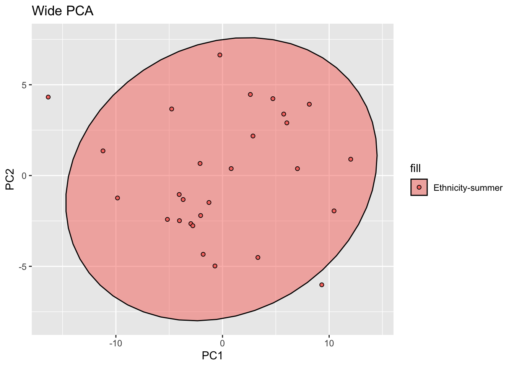
sessionInfo()R version 4.4.2 (2024-10-31)
Platform: aarch64-apple-darwin20
Running under: macOS Monterey 12.5.1
Matrix products: default
BLAS: /Library/Frameworks/R.framework/Versions/4.4-arm64/Resources/lib/libRblas.0.dylib
LAPACK: /Library/Frameworks/R.framework/Versions/4.4-arm64/Resources/lib/libRlapack.dylib; LAPACK version 3.12.0
locale:
[1] en_US.UTF-8/en_US.UTF-8/en_US.UTF-8/C/en_US.UTF-8/en_US.UTF-8
time zone: America/Detroit
tzcode source: internal
attached base packages:
[1] stats graphics grDevices utils datasets methods base
other attached packages:
[1] ggfortify_0.4.17 wesanderson_0.3.7 missMDA_1.19 FactoMineR_2.11
[5] factoextra_1.0.7 ggcorrplot_0.1.4.1 corrr_0.4.4 readxl_1.4.3
[9] lubridate_1.9.4 forcats_1.0.0 stringr_1.5.1 purrr_1.0.2
[13] tibble_3.2.1 ggplot2_3.5.1 tidyverse_2.0.0 tidyr_1.3.1
[17] dplyr_1.1.4 readr_2.1.5 workflowr_1.7.1
loaded via a namespace (and not attached):
[1] Rdpack_2.6.2 gridExtra_2.3 sandwich_3.1-1
[4] rlang_1.1.4 magrittr_2.0.3 git2r_0.35.0
[7] multcomp_1.4-28 compiler_4.4.2 getPass_0.2-4
[10] callr_3.7.6 vctrs_0.6.5 pkgconfig_2.0.3
[13] shape_1.4.6.1 fastmap_1.2.0 backports_1.5.0
[16] labeling_0.4.3 utf8_1.2.4 promises_1.3.2
[19] rmarkdown_2.29 tzdb_0.4.0 nloptr_2.1.1
[22] ps_1.8.1 xfun_0.50 glmnet_4.1-8
[25] jomo_2.7-6 cachem_1.1.0 jsonlite_1.8.9
[28] flashClust_1.01-2 later_1.4.1 pan_1.9
[31] broom_1.0.7 parallel_4.4.2 cluster_2.1.8
[34] R6_2.5.1 bslib_0.8.0 stringi_1.8.4
[37] car_3.1-3 rpart_4.1.24 boot_1.3-31
[40] jquerylib_0.1.4 cellranger_1.1.0 estimability_1.5.1
[43] Rcpp_1.0.14 iterators_1.0.14 knitr_1.49
[46] zoo_1.8-12 nnet_7.3-20 httpuv_1.6.15
[49] Matrix_1.7-1 splines_4.4.2 timechange_0.3.0
[52] tidyselect_1.2.1 abind_1.4-8 rstudioapi_0.17.1
[55] yaml_2.3.10 doParallel_1.0.17 codetools_0.2-20
[58] processx_3.8.5 lattice_0.22-6 withr_3.0.2
[61] coda_0.19-4.1 evaluate_1.0.3 survival_3.8-3
[64] ggpubr_0.6.0 pillar_1.10.1 carData_3.0-5
[67] mice_3.17.0 whisker_0.4.1 DT_0.33
[70] foreach_1.5.2 reformulas_0.4.0 generics_0.1.3
[73] rprojroot_2.0.4 hms_1.1.3 munsell_0.5.1
[76] scales_1.3.0 minqa_1.2.8 xtable_1.8-4
[79] leaps_3.2 glue_1.8.0 emmeans_1.10.6
[82] scatterplot3d_0.3-44 tools_4.4.2 lme4_1.1-36
[85] ggsignif_0.6.4 fs_1.6.5 mvtnorm_1.3-3
[88] grid_4.4.2 rbibutils_2.3 colorspace_2.1-1
[91] nlme_3.1-166 Formula_1.2-5 cli_3.6.3
[94] gtable_0.3.6 rstatix_0.7.2 sass_0.4.9
[97] digest_0.6.37 ggrepel_0.9.6 TH.data_1.1-3
[100] farver_2.1.2 htmlwidgets_1.6.4 htmltools_0.5.8.1
[103] lifecycle_1.0.4 httr_1.4.7 multcompView_0.1-10
[106] mitml_0.4-5 MASS_7.3-64